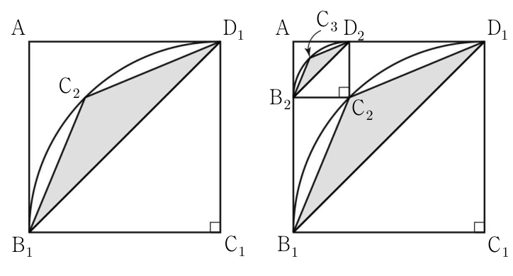
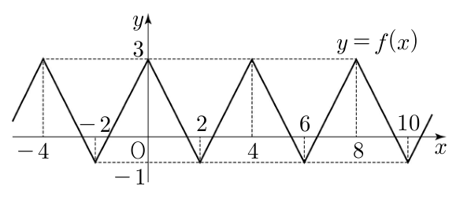

생성기 숫자판 1/6 · G2M8-03#2$\lim_{n\to\infty}\frac{6\times 4^{n}}{4^{n}+1}$의 값으로 옳은 것을 고르세요.
① $2$② $3$③ $4$④ $5$⑤ $6$
정답⑤ $6$ 분모와 분자를 각각 $4^{n}$으로 나누면 $\lim_{n\to\infty}\frac{6\times 4^{n}}{4^{n}+1}=\lim_{n\to\infty}\frac{6}{1+\frac{1}{4^{n}}}$ $\lim_{n\to\infty}\frac{1}{4^{n}}=0$이므로 구하는 값은 $6$
숫자: 원본 5 4 4 1 → 쌍둥이 6 4 4 1 · 같은 수: 1 4
생성기 숫자판 2/6 · G2M8-03#2$\lim_{n\to\infty}\frac{8\times 4^{n}}{4^{n}+3}$의 값으로 옳은 것을 고르세요.
① $6$② $7$③ $8$④ $9$⑤ $10$
정답③ $8$ 분모와 분자를 각각 $4^{n}$으로 나누면 $\lim_{n\to\infty}\frac{8\times 4^{n}}{4^{n}+3}=\lim_{n\to\infty}\frac{8}{1+\frac{3}{4^{n}}}$ $\lim_{n\to\infty}\frac{3}{4^{n}}=0$이므로 구하는 값은 $8$
숫자: 원본 5 4 4 1 → 쌍둥이 8 4 4 3 · 같은 수: 4
생성기 숫자판 3/6 · G2M8-03#2$\lim_{n\to\infty}\frac{3\times 2^{n}}{2^{n}+1}$의 값으로 옳은 것을 고르세요.
① $2$② $3$③ $4$④ $5$⑤ $6$
정답② $3$ 분모와 분자를 각각 $2^{n}$으로 나누면 $\lim_{n\to\infty}\frac{3\times 2^{n}}{2^{n}+1}=\lim_{n\to\infty}\frac{3}{1+\frac{1}{2^{n}}}$ $\lim_{n\to\infty}\frac{1}{2^{n}}=0$이므로 구하는 값은 $3$
숫자: 원본 5 4 4 1 → 쌍둥이 3 2 2 1 · 같은 수: 1
생성기 숫자판 4/6 · G2M8-03#2$\lim_{n\to\infty}\frac{3\times 5^{n}}{5^{n}+5}$의 값으로 옳은 것을 고르세요.
① $2$② $3$③ $4$④ $5$⑤ $6$
정답② $3$ 분모와 분자를 각각 $5^{n}$으로 나누면 $\lim_{n\to\infty}\frac{3\times 5^{n}}{5^{n}+5}=\lim_{n\to\infty}\frac{3}{1+\frac{5}{5^{n}}}$ $\lim_{n\to\infty}\frac{5}{5^{n}}=0$이므로 구하는 값은 $3$
숫자: 원본 5 4 4 1 → 쌍둥이 3 5 5 5 · 같은 수: 5
생성기 숫자판 5/6 · G2M8-03#2$\lim_{n\to\infty}\frac{5\times 3^{n}}{3^{n}+5}$의 값으로 옳은 것을 고르세요.
① $4$② $5$③ $6$④ $7$⑤ $8$
정답② $5$ 분모와 분자를 각각 $3^{n}$으로 나누면 $\lim_{n\to\infty}\frac{5\times 3^{n}}{3^{n}+5}=\lim_{n\to\infty}\frac{5}{1+\frac{5}{3^{n}}}$ $\lim_{n\to\infty}\frac{5}{3^{n}}=0$이므로 구하는 값은 $5$
숫자: 원본 5 4 4 1 → 쌍둥이 5 3 3 5 · 같은 수: 5
생성기 숫자판 6/6 · G2M8-03#2$\lim_{n\to\infty}\frac{9\times 3^{n}}{3^{n}+4}$의 값으로 옳은 것을 고르세요.
① $8$② $9$③ $10$④ $11$⑤ $12$
정답② $9$ 분모와 분자를 각각 $3^{n}$으로 나누면 $\lim_{n\to\infty}\frac{9\times 3^{n}}{3^{n}+4}=\lim_{n\to\infty}\frac{9}{1+\frac{4}{3^{n}}}$ $\lim_{n\to\infty}\frac{4}{3^{n}}=0$이므로 구하는 값은 $9$
숫자: 원본 5 4 4 1 → 쌍둥이 9 3 3 4 · 같은 수: 4
4. 2018년 11월 나형 4번 · 3점 · 고1 범위 · 집합 · G2H-03#0
원본 (내부용)두 집합 \(A=\{1,2,3,4\},\ B=\{1,2\}\)에 대하여 집합 \(A-B\)의 모든 원소의 합은? [3점]
① 5② 6③ 7④ 8⑤ 9
원본 정답 ③
원본 풀이 (내부용)[출제의도] 차집합 이해하기
\(
A-B=\{3,4\}
\)
따라서 모든 원소의 합은 \(7\)
생성기 숫자판 1/6 · G2H-03#0두 집합 $A=\left\{6,\ 7,\ 10,\ 15,\ 16\right\}$, $B=\left\{3,\ 5\right\}$에 대하여 집합 $A-B$의 모든 원소의 합으로 옳은 것을 고르세요.
① $52$② $53$③ $54$④ $55$⑤ $56$
정답③ $54$ $A-B=\left\{6,\ 7,\ 10,\ 15,\ 16\right\}$이므로 모든 원소의 합은 $6+7+10+15+16=54$
원본 (내부용)실수 \(x\)에 대한 두 조건 \( p:x^2-a=0 \) \( q:x=2 \) 에 대하여 \(p\)가 \(q\)이기 위한 필요조건이 되도록 하는 양수 \(a\)의 값은? [3점]
① 1② 2③ 3④ 4⑤ 5
원본 정답 ④
원본 풀이 (내부용)[출제의도] 진리집합의 포함관계 추론하기
두 조건 \(p,q\)의 진리집합을 각각 \(P,Q\)라 하면
\(
P=\{\sqrt a,-\sqrt a\},\quad Q=\{2\}
\)
\(p\)가 \(q\)이기 위한 필요조건이 되려면 \(P\supset Q\)이어야 하므로
\(
\sqrt a=2
\)
따라서 \(a=4\)
생성기 숫자판 1/5 · G2H-03b#0실수 $x$에 대한 두 조건 $p$: $x^{2}-a=0$, $q$: $x=6$에 대하여 $p$가 $q$이기 위한 필요조건이 되도록 하는 양수 $a$의 값으로 옳은 것을 고르세요.
① $192$② $198$③ $204$④ $210$⑤ $216$
정답⑤ $216$ $a$의 세제곱근 중 양수인 것이 $\sqrt[3]{6}$이므로 $a=\left(\sqrt[3]{6}\right)^{3}=6$ $k$의 세제곱근 중 실수인 것이 $6$이므로 $k=6^{3}=216$
숫자: 원본 0 2 → 쌍둥이 0 6 · 같은 수: 0
생성기 숫자판 2/5 · G2H-03b#0실수 $x$에 대한 두 조건 $p$: $x^{2}-a=0$, $q$: $x=3$에 대하여 $p$가 $q$이기 위한 필요조건이 되도록 하는 양수 $a$의 값으로 옳은 것을 고르세요.
① $5$② $6$③ $7$④ $8$⑤ $9$
정답⑤ $9$ $p$가 $q$이기 위한 필요조건이려면 $q\Longrightarrow p$가 참이어야 합니다. $x=3$이 $x^{2}-a=0$을 만족시켜야 하므로 $3^{2}-a=0$ 따라서 $a=9$
숫자: 원본 0 2 → 쌍둥이 0 3 · 같은 수: 0
생성기 숫자판 3/5 · G2H-03b#0실수 $x$에 대한 두 조건 $p$: $x^{2}-a=0$, $q$: $x=5$에 대하여 $p$가 $q$이기 위한 필요조건이 되도록 하는 양수 $a$의 값으로 옳은 것을 고르세요.
① $21$② $22$③ $23$④ $24$⑤ $25$
정답⑤ $25$ $p$가 $q$이기 위한 필요조건이려면 $q\Longrightarrow p$가 참이어야 합니다. $x=5$가 $x^{2}-a=0$을 만족시켜야 하므로 $5^{2}-a=0$ 따라서 $a=25$
숫자: 원본 0 2 → 쌍둥이 0 5 · 같은 수: 0
생성기 숫자판 4/5 · G2H-03b#0실수 $x$에 대한 두 조건 $p$: $x^{2}-a=0$, $q$: $x=-3$에 대하여 $p$가 $q$이기 위한 필요조건이 되도록 하는 양수 $a$의 값으로 옳은 것을 고르세요.
① $6$② $7$③ $8$④ $9$⑤ $10$
정답④ $9$ $p$가 $q$이기 위한 필요조건이려면 $q\Longrightarrow p$가 참이어야 합니다. $x=-3$이 $x^{2}-a=0$을 만족시켜야 하므로 $\left(-3\right)^{2}-a=0$ 따라서 $a=9$
숫자: 원본 0 2 → 쌍둥이 0 3 · 같은 수: 0
생성기 숫자판 5/5 · G2H-03b#0실수 $x$에 대한 두 조건 $p$: $x^{2}-a=0$, $q$: $x=-2$에 대하여 $p$가 $q$이기 위한 필요조건이 되도록 하는 양수 $a$의 값으로 옳은 것을 고르세요.
① $3$② $4$③ $5$④ $6$⑤ $7$
정답② $4$ $p$가 $q$이기 위한 필요조건이려면 $q\Longrightarrow p$가 참이어야 합니다. $x=-2$가 $x^{2}-a=0$을 만족시켜야 하므로 $\left(-2\right)^{2}-a=0$ 따라서 $a=4$
숫자: 원본 0 2 → 쌍둥이 0 2 · 같은 수: 0 2
8. 2018년 11월 나형 8번 · 3점 · 수학Ⅱ 미분 · G2M2-01#5
원본 (내부용)다항함수 \(f(x)\)가 \(\displaystyle\lim_{h\to0}\frac{f(2+h)-f(2)}{3h}=5\)를 만족시킬 때, \(f'(2)\)의 값은? [3점]
① 9② 12③ 15④ 18⑤ 21
원본 정답 ③
원본 풀이 (내부용)[출제의도] 미분계수 이해하기
\(
\begin{aligned}
\lim_{h\to0}\frac{f(2+h)-f(2)}{3h}
&=\frac13\times\lim_{h\to0}\frac{f(2+h)-f(2)}h\\
&=\frac13\times f'(2)=5
\end{aligned}
\)
따라서 \(f'(2)=15\)
생성기 숫자판 1/6 · G2M2-01#5다항함수 $f\left(x\right)$에 대하여 $\lim_{h\to 0}\frac{f\left(5+h\right)-f\left(5\right)}{2h}=4$일 때, $f'\left(5\right)$의 값으로 옳은 것을 고르세요.
① $4$② $6$③ $8$④ $9$⑤ $10$
정답③ $8$ $\lim_{h\to 0}\frac{f\left(5+h\right)-f\left(5\right)}{2h}=\frac{1}{2}\lim_{h\to 0}\frac{f\left(5+h\right)-f\left(5\right)}{h}$ $=\frac{1}{2}f'\left(5\right)=4$ 따라서 $f'\left(5\right)=8$
생성기 숫자판 2/6 · G2M2-01#5다항함수 $f\left(x\right)$에 대하여 $\lim_{h\to 0}\frac{f\left(2+h\right)-f\left(2\right)}{4h}=3$일 때, $f'\left(2\right)$의 값으로 옳은 것을 고르세요.
① $3$② $8$③ $10$④ $11$⑤ $12$
정답⑤ $12$ $\lim_{h\to 0}\frac{f\left(2+h\right)-f\left(2\right)}{4h}=\frac{1}{4}\lim_{h\to 0}\frac{f\left(2+h\right)-f\left(2\right)}{h}$ $=\frac{1}{4}f'\left(2\right)=3$ 따라서 $f'\left(2\right)=12$
생성기 숫자판 3/6 · G2M2-01#5다항함수 $f\left(x\right)$에 대하여 $\lim_{h\to 0}\frac{f\left(2+h\right)-f\left(2\right)}{2h}=2$일 때, $f'\left(2\right)$의 값으로 옳은 것을 고르세요.
① $4$② $5$③ $6$④ $7$⑤ $8$
정답① $4$ $\lim_{h\to 0}\frac{f\left(2+h\right)-f\left(2\right)}{2h}=\frac{1}{2}\lim_{h\to 0}\frac{f\left(2+h\right)-f\left(2\right)}{h}$ $=\frac{1}{2}f'\left(2\right)=2$ 따라서 $f'\left(2\right)=4$
숫자: 원본 0 2 2 3 5 2 → 쌍둥이 0 2 2 2 2 2 · 같은 수: 0 2
생성기 숫자판 4/6 · G2M2-01#5다항함수 $f\left(x\right)$에 대하여 $\lim_{h\to 0}\frac{f\left(4+h\right)-f\left(4\right)}{2h}=6$일 때, $f'\left(4\right)$의 값으로 옳은 것을 고르세요.
① $6$② $10$③ $11$④ $12$⑤ $14$
정답④ $12$ $\lim_{h\to 0}\frac{f\left(4+h\right)-f\left(4\right)}{2h}=\frac{1}{2}\lim_{h\to 0}\frac{f\left(4+h\right)-f\left(4\right)}{h}$ $=\frac{1}{2}f'\left(4\right)=6$ 따라서 $f'\left(4\right)=12$
숫자: 원본 0 2 2 3 5 2 → 쌍둥이 0 4 4 2 6 4 · 같은 수: 0 2
생성기 숫자판 5/6 · G2M2-01#5다항함수 $f\left(x\right)$에 대하여 $\lim_{h\to 0}\frac{f\left(5+h\right)-f\left(5\right)}{2h}=6$일 때, $f'\left(5\right)$의 값으로 옳은 것을 고르세요.
① $12$② $13$③ $14$④ $15$⑤ $24$
정답① $12$ $\lim_{h\to 0}\frac{f\left(5+h\right)-f\left(5\right)}{2h}=\frac{1}{2}\lim_{h\to 0}\frac{f\left(5+h\right)-f\left(5\right)}{h}$ $=\frac{1}{2}f'\left(5\right)=6$ 따라서 $f'\left(5\right)=12$
생성기 숫자판 6/6 · G2M2-01#5다항함수 $f\left(x\right)$에 대하여 $\lim_{h\to 0}\frac{f\left(4+h\right)-f\left(4\right)}{3h}=4$일 때, $f'\left(4\right)$의 값으로 옳은 것을 고르세요.
① $12$② $13$③ $14$④ $15$⑤ $24$
정답① $12$ $\lim_{h\to 0}\frac{f\left(4+h\right)-f\left(4\right)}{3h}=\frac{1}{3}\lim_{h\to 0}\frac{f\left(4+h\right)-f\left(4\right)}{h}$ $=\frac{1}{3}f'\left(4\right)=4$ 따라서 $f'\left(4\right)=12$
숫자: 원본 0 2 2 3 5 2 → 쌍둥이 0 4 4 3 4 4 · 같은 수: 0 3
9. 2018년 11월 나형 9번 · 3점 · 고1 범위 · 여러 가지 방정식과 부등식 · G2H-02#10
원본 (내부용)\(x>0\)인 실수 \(x\)에 대하여 \( 4x+\frac{a}{x}\quad(a>0) \) 의 최솟값이 2일 때, 상수 \(a\)의 값은? [3점]
① \(\frac14\)② \(\frac12\)③ \(\frac34\)④ 1⑤ \(\frac54\)
원본 정답 ①
원본 풀이 (내부용)[출제의도] 절대부등식 이해하기
\(
4x+\frac ax\geq2\sqrt{4x\times\frac ax}=2\sqrt{4a}=2
\)
(단, 등호는 \(4x=\frac ax\)일 때 성립한다.)
따라서 \(a=\frac14\)
생성기 숫자판 1/6 · G2H-02#10$x>0$인 실수 $x$에 대하여 $2x+\frac{a}{x}$의 최솟값이 $7$일 때, 양수 $a$의 값으로 옳은 것을 고르세요.
① $\frac{49}{8}$② $\frac{53}{8}$③ $\frac{57}{8}$④ $\frac{49}{4}$⑤ $\frac{49}{2}$
원본 (내부용)수열 \(\{a_n\}\)에 대하여 \(\displaystyle\sum_{n=1}^{\infty}\left(a_n-\frac{2n}{3n+1}\right)=11\)일 때, \(\displaystyle\lim_{n\to\infty}a_n\)의 값은? [3점]
① \(\frac16\)② \(\frac13\)③ \(\frac12\)④ \(\frac23\)⑤ \(\frac56\)
원본 정답 ④
원본 풀이 (내부용)[출제의도] 급수와 일반항의 관계 이해하기
급수
\(
\sum_{n=1}^{\infty}\left(a_n-\frac{2n}{3n+1}\right)
\)
이 수렴하므로
\(
\lim_{n\to\infty}\left(a_n-\frac{2n}{3n+1}\right)=0
\)
생성기 숫자판 1/6 · G2M6-03#1수열 $\left\{a_{n}\right\}$에 대하여 $\sum_{n=1}^{\infty}\left(a_{n}-\frac{8n}{n+6}\right)=8$일 때, $\lim_{n\to\infty}\left(7a_{n}+7\right)$의 값으로 옳은 것을 고르세요.
① $\frac{123}{2}$② $62$③ $\frac{125}{2}$④ $63$⑤ $64$
생성기 숫자판 2/6 · G2M6-03#1수열 $\left\{a_{n}\right\}$에 대하여 $\sum_{n=1}^{\infty}\left(a_{n}-\frac{11n}{5n-5}\right)=20$일 때, $\lim_{n\to\infty}2a_{n}$의 값으로 옳은 것을 고르세요.
① $\frac{17}{5}$② $\frac{39}{10}$③ $\frac{22}{5}$④ $\frac{49}{10}$⑤ $\frac{27}{5}$
생성기 숫자판 3/6 · G2M6-03#1수열 $\left\{a_{n}\right\}$에 대하여 $\sum_{n=1}^{\infty}\left(a_{n}-\frac{48n}{6n-2}\right)=2$일 때, $\lim_{n\to\infty}\left(6a_{n}+8\right)$의 값으로 옳은 것을 고르세요.
생성기 숫자판 4/6 · G2M6-03#1수열 $\left\{a_{n}\right\}$에 대하여 $\sum_{n=1}^{\infty}\left(a_{n}-\frac{6n}{2n+5}\right)=17$일 때, $\lim_{n\to\infty}\left(6a_{n}+5\right)$의 값으로 옳은 것을 고르세요.
생성기 숫자판 5/6 · G2M6-03#1수열 $\left\{a_{n}\right\}$에 대하여 $\sum_{n=1}^{\infty}\left(a_{n}-\frac{8n}{n+6}\right)=3$일 때, $\lim_{n\to\infty}\left(6a_{n}+8\right)$의 값으로 옳은 것을 고르세요.
① $55$② $\frac{111}{2}$③ $56$④ $\frac{113}{2}$⑤ $57$
생성기 숫자판 6/6 · G2M6-03#1수열 $\left\{a_{n}\right\}$에 대하여 $\sum_{n=1}^{\infty}\left(a_{n}-\frac{12n}{6n+1}\right)=12$일 때, $\lim_{n\to\infty}\left(8a_{n}+8\right)$의 값으로 옳은 것을 고르세요.
① $22$② $\frac{45}{2}$③ $23$④ $\frac{47}{2}$⑤ $24$
원본 (내부용)그림은 집합 \(X\)에서 \(X\)로의 두 함수 \(f,\ g\)를 나타낸 것이다. - \(f\)의 대응: \(1\mapsto2,\ 2\mapsto3,\ 3\mapsto1,\ 4\mapsto4\) - \(g\)의 대응: \(1\mapsto1,\ 2\mapsto2,\ 3\mapsto4,\ 4\mapsto3\) \((f\circ g)(1)+(g\circ f)(3)\)의 값은? [3점]
① 3② 4③ 5④ 6⑤ 7
원본 정답 ①
원본 풀이 (내부용)[출제의도] 합성함수 이해하기
\(
g(1)=1\text{이므로 }f(g(1))=f(1)=2
\)
\(
f(3)=1\text{이므로 }g(f(3))=g(1)=1
\)
따라서
\(
(f\circ g)(1)+(g\circ f)(3)=3
\)
생성기 숫자판 1/6 · G2f-17#3그림은 집합 $X$에서 $X$로의 두 함수 $f$, $g$를 나타낸 것입니다. $\left(f\circ g\right)\left(10\right)+\left(g\circ f\right)\left(2\right)$의 값으로 옳은 것을 고르세요.
① $2$② $3$③ $4$④ $5$⑤ $6$
정답③ $4$ $\left(f\circ g\right)\left(10\right)=f\left(g\left(10\right)\right)=f\left(2\right)=2$ $\left(g\circ f\right)\left(2\right)=g\left(f\left(2\right)\right)=g\left(2\right)=2$ 따라서 구하는 값은 $2+2=4$
생성기 숫자판 2/6 · G2f-17#3그림은 집합 $X$에서 $X$로의 두 함수 $f$, $g$를 나타낸 것입니다. $\left(f\circ g\right)\left(4\right)+\left(g\circ f\right)\left(1\right)$의 값으로 옳은 것을 고르세요.
① $6$② $7$③ $8$④ $9$⑤ $10$
정답④ $9$ $\left(f\circ g\right)\left(4\right)=f\left(g\left(4\right)\right)=f\left(10\right)=1$ $\left(g\circ f\right)\left(1\right)=g\left(f\left(1\right)\right)=g\left(8\right)=8$ 따라서 구하는 값은 $1+8=9$
생성기 숫자판 3/6 · G2f-17#3그림은 집합 $X$에서 $X$로의 두 함수 $f$, $g$를 나타낸 것입니다. $\left(f\circ g\right)\left(4\right)+\left(g\circ f\right)\left(5\right)$의 값으로 옳은 것을 고르세요.
① $4$② $5$③ $6$④ $7$⑤ $8$
정답④ $7$ $\left(f\circ g\right)\left(4\right)=f\left(g\left(4\right)\right)=f\left(8\right)=2$ $\left(g\circ f\right)\left(5\right)=g\left(f\left(5\right)\right)=g\left(8\right)=5$ 따라서 구하는 값은 $2+5=7$
생성기 숫자판 4/6 · G2f-17#3그림은 집합 $X$에서 $X$로의 두 함수 $f$, $g$를 나타낸 것입니다. $\left(f\circ g\right)\left(7\right)+\left(g\circ f\right)\left(1\right)$의 값으로 옳은 것을 고르세요.
① $4$② $5$③ $6$④ $7$⑤ $8$
정답① $4$ $\left(f\circ g\right)\left(7\right)=f\left(g\left(7\right)\right)=f\left(5\right)=3$ $\left(g\circ f\right)\left(1\right)=g\left(f\left(1\right)\right)=g\left(3\right)=1$ 따라서 구하는 값은 $3+1=4$
생성기 숫자판 5/6 · G2f-17#3그림은 집합 $X$에서 $X$로의 두 함수 $f$, $g$를 나타낸 것입니다. $\left(f\circ g\right)\left(4\right)+\left(g\circ f\right)\left(4\right)$의 값으로 옳은 것을 고르세요.
① $13$② $14$③ $15$④ $16$⑤ $17$
정답③ $15$ $\left(f\circ g\right)\left(4\right)=f\left(g\left(4\right)\right)=f\left(5\right)=7$ $\left(g\circ f\right)\left(4\right)=g\left(f\left(4\right)\right)=g\left(7\right)=8$ 따라서 구하는 값은 $7+8=15$
생성기 숫자판 6/6 · G2f-17#3그림은 집합 $X$에서 $X$로의 두 함수 $f$, $g$를 나타낸 것입니다. $\left(f\circ g\right)\left(5\right)+\left(g\circ f\right)\left(10\right)$의 값으로 옳은 것을 고르세요.
① $6$② $7$③ $8$④ $9$⑤ $10$
정답① $6$ $\left(f\circ g\right)\left(5\right)=f\left(g\left(5\right)\right)=f\left(1\right)=5$ $\left(g\circ f\right)\left(10\right)=g\left(f\left(10\right)\right)=g\left(5\right)=1$ 따라서 구하는 값은 $5+1=6$
13. 2018년 11월 나형 13번 · 3점 · 고1 범위 · 유리함수와 무리함수 · G2H-04b#3
원본 (내부용)유리함수 \(f(x)=\dfrac{3x+1}{x-k}\)의 그래프의 두 점근선의 교점이 직선 \(y=x\) 위에 있을 때, 상수 \(k\)의 값은? (단, \(k\ne-\frac13\)) [3점]
① 1② 2③ 3④ 4⑤ 5
원본 정답 ③
원본 풀이 (내부용)[출제의도] 유리함수의 그래프 이해하기
함수
\(
f(x)=\frac{3x+1}{x-k}=\frac{3k+1}{x-k}+3
\)
의 그래프의 두 점근선의 방정식은 \(x=k,\ y=3\)이고 두 점근선의 교점 \((k,3)\)은 직선 \(y=x\) 위의 점이다.
따라서 \(k=3\)
생성기 숫자판 1/6 · G2H-04b#3유리함수 $f\left(x\right)=\frac{5x-4}{x-k}$의 그래프의 두 점근선의 교점이 직선 $y=x+1$ 위에 있을 때, 상수 $k$의 값으로 옳은 것을 고르세요.
① $1$② $2$③ $3$④ $4$⑤ $5$
정답④ $4$ 두 점근선은 직선 $x=k$, $y=5$이므로 교점은 $\left(k,\ 5\right)$ 이 점이 직선 $y=x+1$ 위에 있으므로 $5=k+1$ 따라서 $k=4$
숫자: 원본 3 1 13 → 쌍둥이 5 4 1 · 같은 수: 1
생성기 숫자판 2/6 · G2H-04b#3유리함수 $f\left(x\right)=\frac{4x+1}{x-k}$의 그래프의 두 점근선의 교점이 직선 $y=x$ 위에 있을 때, 상수 $k$의 값으로 옳은 것을 고르세요.
① $0$② $1$③ $2$④ $3$⑤ $4$
정답⑤ $4$ 두 점근선은 직선 $x=k$, $y=4$이므로 교점은 $\left(k,\ 4\right)$ 이 점이 직선 $y=x$ 위에 있으므로 $4=k$ 따라서 $k=4$
숫자: 원본 3 1 13 → 쌍둥이 4 1 · 같은 수: 1
생성기 숫자판 3/6 · G2H-04b#3유리함수 $f\left(x\right)=\frac{2x-4}{x-k}$의 그래프의 두 점근선의 교점이 직선 $y=x-1$ 위에 있을 때, 상수 $k$의 값으로 옳은 것을 고르세요.
① $3$② $4$③ $5$④ $6$⑤ $7$
정답① $3$ 두 점근선은 직선 $x=k$, $y=2$이므로 교점은 $\left(k,\ 2\right)$ 이 점이 직선 $y=x-1$ 위에 있으므로 $2=k-1$ 따라서 $k=3$
숫자: 원본 3 1 13 → 쌍둥이 2 4 1 · 같은 수: 1
생성기 숫자판 4/6 · G2H-04b#3유리함수 $f\left(x\right)=\frac{x-5}{x-k}$의 그래프의 두 점근선의 교점이 직선 $y=-x$ 위에 있을 때, 상수 $k$의 값으로 옳은 것을 고르세요.
① $-3$② $-2$③ $-1$④ $0$⑤ $1$
정답③ $-1$ 두 점근선은 직선 $x=k$, $y=1$이므로 교점은 $\left(k,\ 1\right)$ 이 점이 직선 $y=-x$ 위에 있으므로 $1=-k$ 따라서 $k=-1$
숫자: 원본 3 1 13 → 쌍둥이 5
생성기 숫자판 5/6 · G2H-04b#3유리함수 $f\left(x\right)=\frac{2x-5}{x-k}$의 그래프의 두 점근선의 교점이 직선 $y=x$ 위에 있을 때, 상수 $k$의 값으로 옳은 것을 고르세요.
① $1$② $2$③ $3$④ $4$⑤ $5$
정답② $2$ 두 점근선은 직선 $x=k$, $y=2$이므로 교점은 $\left(k,\ 2\right)$ 이 점이 직선 $y=x$ 위에 있으므로 $2=k$ 따라서 $k=2$
숫자: 원본 3 1 13 → 쌍둥이 2 5
생성기 숫자판 6/6 · G2H-04b#3유리함수 $f\left(x\right)=\frac{4x+3}{x-k}$의 그래프의 두 점근선의 교점이 직선 $y=x+1$ 위에 있을 때, 상수 $k$의 값으로 옳은 것을 고르세요.
① $1$② $2$③ $3$④ $4$⑤ $5$
정답③ $3$ 두 점근선은 직선 $x=k$, $y=4$이므로 교점은 $\left(k,\ 4\right)$ 이 점이 직선 $y=x+1$ 위에 있으므로 $4=k+1$ 따라서 $k=3$
숫자: 원본 3 1 13 → 쌍둥이 4 3 1 · 같은 수: 1 3
14. 2018년 11월 나형 14번 · 4점 · 수학Ⅰ 수열 · 4점 쌍둥이
원본 (내부용)등차수열 \(\{a_n\}\)에 대하여 \(a_6-a_2=a_4,\ a_1+a_3=20\)일 때, \(a_{10}\)의 값은? [4점]
① 30② 35③ 40④ 45⑤ 50
원본 정답 ⑤
원본 풀이 (내부용)[출제의도] 등차수열 이해하기
등차수열 \(\{a_n\}\)의 공차를 \(d\)라 하면
\(
a_6-a_2=4d\text{이고 }a_4=a_1+3d\text{이므로 }a_1=d\quad\cdots\quad\text{①}
\)
\(
a_1+a_3=2a_2\text{이므로 }a_2=a_1+d=10\quad\cdots\quad\text{②}
\)
①, ②에 의하여 \(a_1=d=5\)
\(
\therefore\ a_n=5+(n-1)\times5=5n
\)
따라서 \(a_{10}=50\)
쌍둥이 1/5 · 4점 쌍둥이등차수열 $\left\{a_{n}\right\}$에 대하여 $a_{9}-a_{3}=a_{5}$, $a_{2}+a_{4}=32$일 때, $a_{11}$의 값으로 옳은 것을 고르세요.
15. 2018년 11월 나형 15번 · 4점 · 수학Ⅱ 함수의 극한·연속 · 4점 쌍둥이
원본 (내부용)\(-3<x<3\)에서 정의된 함수 \(y=f(x)\)의 그래프가 그림과 같다. 그래프의 표시: - 왼쪽 선분은 \((-3,-1)\)에서 열린 점으로 시작하여 \((-1,0)\)의 열린 점에 끝난다. - 위쪽 곡선은 \((-1,3)\)의 닫힌 점에서 시작하여 \((0,2)\)의 열린 점에 끝난다. - 아래쪽 곡선은 \((0,0)\)의 닫힌 점에서 시작하여 \((1,-1)\)의 열린 점에 끝난다. - 오른쪽 곡선은 \((1,1)\)의 열린 점에서 시작하여 \((3,2)\)의 열린 점에 끝난다. \(x=1\)에는 별도로 닫힌 점이 표시되어 있다. - 축 눈금에는 \(x=-3,-2,-1,1,2,3\), \(y=-1,1,2,3\)이 표시되어 있다. 부등식 \(\displaystyle\lim_{x\to a-}f(x)>\lim_{x\to a+}f(x)\)를 만족시키는 상수 \(a\)의 값은? (단, \(-3<a<3\)) [4점]
① \(-2\)② \(-1\)③ 0④ 1⑤ 2
원본 정답 ③
원본 풀이 (내부용)[출제의도] 함수의 극한 이해하기
\(
\lim_{x\to0^-}f(x)=2,\quad \lim_{x\to0^+}f(x)=0
\)
이므로 부등식
\(
\lim_{x\to a^-}f(x)>\lim_{x\to a^+}f(x)
\)
를 만족시키는 \(a\)의 값은 \(0\)
쌍둥이 1/5 · 4점 쌍둥이$-3<x<4$에서 정의된 함수 $y=f(x)$의 그래프가 그림과 같습니다. 부등식 $\lim_{x\to a-}f(x)>\lim_{x\to a+}f(x)$를 만족시키는 상수 $a$의 값을 고르세요. (단, $-3<a<4$)
원본 (내부용)수직선 위를 움직이는 점 \(P\)의 시각 \(t\ (t\ge0)\)에서의 위치 \(x\)가 \(x=-t^2+6t\)이다. 점 \(P\)의 속도가 2일 때, 점 \(P\)의 위치는? [4점]
① 8② \(\frac{17}{2}\)③ 9④ \(\frac{19}{2}\)⑤ 10
원본 정답 ①
원본 풀이 (내부용)[출제의도] 도함수를 활용하여 문제해결하기
점 \(P\)의 시각 \(t\)에서의 위치가 \(x=-t^2+6t\)이므로
속도는
\(
\frac{dx}{dt}=-2t+6
\)
\(
-2t+6=2\text{에서 }t=2
\)
따라서 \(t=2\)에서의 점 \(P\)의 위치는 \(8\)
쌍둥이 1/5 · 4점 쌍둥이수직선 위를 움직이는 점 $\mathrm{P}$의 시각 $t\left(t\ge 0\right)$에서의 위치 $x$가 $x=-t^{2}+8t$입니다. 점 $\mathrm{P}$의 속도가 $4$일 때, 점 $\mathrm{P}$의 위치로 옳은 것을 고르세요.
① $\frac{23}{2}$② $12$③ $\frac{25}{2}$④ $13$⑤ $\frac{27}{2}$
정답② $12$ 속도는 $v=\frac{dx}{dt}=-2t+8$ $-2t+8=4$에서 $t=2$ $x=-2^{2}+8\times 2$ $=12$
숫자: 원본 0 6 2 → 쌍둥이 0 8 4 · 같은 수: 0
쌍둥이 2/5 · 4점 쌍둥이수직선 위를 움직이는 점 $\mathrm{P}$의 시각 $t\left(t\ge 0\right)$에서의 위치 $x$가 $x=-t^{2}+10t$입니다. 점 $\mathrm{P}$의 속도가 $4$일 때, 점 $\mathrm{P}$의 위치로 옳은 것을 고르세요.
① $19$② $\frac{39}{2}$③ $20$④ $\frac{41}{2}$⑤ $21$
정답⑤ $21$ 속도는 $v=\frac{dx}{dt}=-2t+10$ $-2t+10=4$에서 $t=3$ $x=-3^{2}+10\times 3$ $=21$
숫자: 원본 0 6 2 → 쌍둥이 0 10 4 · 같은 수: 0
쌍둥이 3/5 · 4점 쌍둥이수직선 위를 움직이는 점 $\mathrm{P}$의 시각 $t\left(t\ge 0\right)$에서의 위치 $x$가 $x=-2t^{2}+12t$입니다. 점 $\mathrm{P}$의 속도가 $4$일 때, 점 $\mathrm{P}$의 위치로 옳은 것을 고르세요.
① $16$② $\frac{33}{2}$③ $17$④ $\frac{35}{2}$⑤ $18$
정답① $16$ 속도는 $v=\frac{dx}{dt}=-4t+12$ $-4t+12=4$에서 $t=2$ $x=-2\times 2^{2}+12\times 2$ $=16$
숫자: 원본 0 6 2 → 쌍둥이 0 2 12 4 · 같은 수: 0 2
쌍둥이 4/5 · 4점 쌍둥이수직선 위를 움직이는 점 $\mathrm{P}$의 시각 $t(t\ge0)$에서의 위치가 $x=-3t^2+18t$입니다. 점 $\mathrm{P}$의 속도가 $8$일 때, 점 $\mathrm{{P}}$의 위치를 구하세요.
① $\frac{59}{3}$② $\frac{62}{3}$③ $\frac{65}{3}$④ $\frac{68}{3}$⑤ $\frac{71}{3}$
정답③ $\frac{65}{3}$ 속도가 8이 되는 시각은 $t=5$입니다. 따라서 $x(5)=-3(5)^2+18(5)=15$입니다.
숫자: 원본 0 6 2 → 쌍둥이 0 3 18 8 · 같은 수: 0
쌍둥이 5/5 · 4점 쌍둥이수직선 위를 움직이는 점 $\mathrm{P}$의 시각 $t(t\ge0)$에서의 위치가 $x=-2t^2+14t$입니다. 점 $\mathrm{P}$의 속도가 $6$일 때, 점 $\mathrm{{P}}$의 위치를 구하세요.
① $12$② $16$③ $20$④ $24$⑤ $28$
정답③ $20$ 속도가 6이 되는 시각은 $t=2$입니다. 따라서 $x(2)=-2(2)^2+14(2)=20$입니다.
숫자: 원본 0 6 2 → 쌍둥이 0 2 14 6 · 같은 수: 0 2 6
17. 2018년 11월 나형 17번 · 4점 · 수학Ⅰ 수열 · 4점 쌍둥이
원본 (내부용)어떤 자연수 \(m\)에 대하여 수열 \(\{a_n\}\)이 \( \sum_{k=1}^{m}a_k=-1,\qquad \sum_{k=1}^{m}a_k^2=3 \) 을 만족시킨다. \(\displaystyle\sum_{k=1}^{m}(a_k+3)^2=60\)일 때, \(m\)의 값은? [4점]
① 3② 4③ 5④ 6⑤ 7
원본 정답 ⑤
원본 풀이 (내부용)[출제의도] 수열의 합 이해하기
\(
\begin{aligned}
\sum_{k=1}^{m}(a_k+3)^2
&=\sum_{k=1}^{m}(a_k^2+6a_k+9)\\
&=\sum_{k=1}^{m}a_k^2+6\sum_{k=1}^{m}a_k+\sum_{k=1}^{m}9\\
&=3-6+9m=60
\end{aligned}
\)
따라서 \(m=7\)
쌍둥이 1/5 · 4점 쌍둥이어떤 자연수 $m$에 대하여 $\sum_{k=1}^m a_k=-2$, $\sum_{k=1}^m a_k^2=6$입니다. $\sum_{k=1}^m(a_k+4)^2=118$일 때, $m$을 구하세요.
쌍둥이 2/5 · 4점 쌍둥이어떤 자연수 $m$에 대하여 수열 $\left\{a_{n}\right\}$이 $\sum_{k=1}^{m}a_{k}=2$, $\sum_{k=1}^{m}{a_{k}}^{2}=5$를 만족시킵니다. $\sum_{k=1}^{m}\left(a_{k}+2\right)^{2}=37$일 때, $m$의 값으로 옳은 것을 고르세요.
쌍둥이 3/5 · 4점 쌍둥이어떤 자연수 $m$에 대하여 수열 $\left\{a_{n}\right\}$이 $\sum_{k=1}^{m}a_{k}=-3$, $\sum_{k=1}^{m}{a_{k}}^{2}=7$을 만족시킵니다. $\sum_{k=1}^{m}\left(a_{k}+4\right)^{2}=63$일 때, $m$의 값으로 옳은 것을 고르세요.
쌍둥이 4/5 · 4점 쌍둥이어떤 자연수 $m$에 대하여 수열 $\left\{a_{n}\right\}$이 $\sum_{k=1}^{m}a_{k}=1$, $\sum_{k=1}^{m}{a_{k}}^{2}=2$를 만족시킵니다. $\sum_{k=1}^{m}\left(a_{k}+3\right)^{2}=44$일 때, $m$의 값으로 옳은 것을 고르세요.
원본 (내부용)다음은 \(\displaystyle\sum_{k=1}^{14}\log_2\{\log_{k+1}(k+2)\}\)의 값을 구하는 과정이다. 자연수 \(n\)에 대하여 \( \log_{n+1}(n+2)=\frac{\boxed{(가)}}{\log_2(n+1)} \) 이므로 \( \sum_{k=1}^{14}\log_2\{\log_{k+1}(k+2)\} =\log_2\left(\frac{\boxed{(나)}}{\log_2 2}\right) \) 따라서 \( \sum_{k=1}^{14}\log_2\{\log_{k+1}(k+2)\}=\boxed{(다)} \) 위의 (가)에 알맞은 식을 \(f(n)\)이라 하고, (나), (다)에 알맞은 수를 각각 \(p,\ q\)라 할 때, \(f(p+q)\)의 값은? [4점]
쌍둥이 1/5 · 4점 쌍둥이다음은 $\displaystyle\sum_{k=1}^{78}\log_{2}\{\log_{k+2}(k+3)\}$의 값을 구하는 과정이다. 자연수 $n$에 대하여 $\log_{n+2}(n+3)=\dfrac{\boxed{(가)}}{\log_{3}(n+2)}$이므로 주어진 합은 $\log_{2}\left(\dfrac{\boxed{(나)}}{\log_{3}3}\right)$이고, 그 값은 $\boxed{(다)}$이다. (가)에 알맞은 식을 $f(n)$이라 하고, (나), (다)에 알맞은 수를 각각 $p,q$라 할 때, $f(p+q+2)$의 값을 구하시오. [4점]
쌍둥이 2/5 · 4점 쌍둥이다음은 $\displaystyle\sum_{k=1}^{78}\log_{4}\{\log_{k+2}(k+3)\}$의 값을 구하는 과정이다. 자연수 $n$에 대하여 $\log_{n+2}(n+3)=\dfrac{\boxed{(가)}}{\log_{3}(n+2)}$이므로 주어진 합은 $\log_{4}\left(\dfrac{\boxed{(나)}}{\log_{3}3}\right)$이고, 그 값은 $\boxed{(다)}$이다. (가)에 알맞은 식을 $f(n)$이라 하고, (나), (다)에 알맞은 수를 각각 $p,q$라 할 때, $f(p+q+1)$의 값을 구하시오. [4점]
쌍둥이 3/5 · 4점 쌍둥이다음은 $\displaystyle\sum_{k=1}^{24}\log_{3}\{\log_{k+2}(k+3)\}$의 값을 구하는 과정이다. 자연수 $n$에 대하여 $\log_{n+2}(n+3)=\dfrac{\boxed{(가)}}{\log_{3}(n+2)}$이므로 주어진 합은 $\log_{3}\left(\dfrac{\boxed{(나)}}{\log_{3}3}\right)$이고, 그 값은 $\boxed{(다)}$이다. (가)에 알맞은 식을 $f(n)$이라 하고, (나), (다)에 알맞은 수를 각각 $p,q$라 할 때, $f(p+q+2)$의 값을 구하시오. [4점]
쌍둥이 4/5 · 4점 쌍둥이다음은 $\displaystyle\sum_{k=1}^{6}\log_{3}\{\log_{k+1}(k+2)\}$의 값을 구하는 과정이다. 자연수 $n$에 대하여 $\log_{n+1}(n+2)=\dfrac{\boxed{(가)}}{\log_{2}(n+1)}$이므로 주어진 합은 $\log_{3}\left(\dfrac{\boxed{(나)}}{\log_{2}2}\right)$이고, 그 값은 $\boxed{(다)}$이다. (가)에 알맞은 식을 $f(n)$이라 하고, (나), (다)에 알맞은 수를 각각 $p,q$라 할 때, $f(p+q+2)$의 값을 구하시오. [4점]
쌍둥이 5/5 · 4점 쌍둥이다음은 $\displaystyle\sum_{k=1}^{240}\log_{3}\{\log_{k+2}(k+3)\}$의 값을 구하는 과정이다. 자연수 $n$에 대하여 $\log_{n+2}(n+3)=\dfrac{\boxed{(가)}}{\log_{3}(n+2)}$이므로 주어진 합은 $\log_{3}\left(\dfrac{\boxed{(나)}}{\log_{3}3}\right)$이고, 그 값은 $\boxed{(다)}$이다. (가)에 알맞은 식을 $f(n)$이라 하고, (나), (다)에 알맞은 수를 각각 $p,q$라 할 때, $f(p+q+1)$의 값을 구하시오. [4점]
원본 (내부용)그림과 같이 한 변의 길이가 2인 정사각형 \(AB_1C_1D_1\) 안에 꼭짓점 \(C_1\)을 중심으로 하고 선분 \(C_1B_1\)을 반지름으로 하는 사분원을 그린다. 호 \(B_1D_1\)을 이등분하는 점을 \(C_2\)라 하고 삼각형 \(C_2B_1D_1\)에 색칠하여 얻은 그림을 \(R_1\)이라 하자. 그림 \(R_1\)에서 선분 \(AB_1\) 위의 점 \(B_2\), 선분 \(AD_1\) 위의 점 \(D_2\)와 두 점 \(A,\ C_2\)를 꼭짓점으로 하는 정사각형 \(AB_2C_2D_2\)를 그리고, 정사각형 \(AB_2C_2D_2\) 안에 꼭짓점 \(C_2\)를 중심으로 하고 선분 \(C_2B_2\)를 반지름으로 하는 사분원을 그린다. 호 \(B_2D_2\)를 이등분하는 점을 \(C_3\)이라 하고 삼각형 \(C_3B_2D_2\)에 색칠하여 얻은 그림을 \(R_2\)라 하자. 이와 같은 과정을 계속하여 \(n\)번째 얻은 그림 \(R_n\)에서 색칠되어 있는 부분의 넓이를 \(S_n\)이라 할 때, \(\displaystyle\lim_{n\to\infty}S_n\)의 값은? [4점] 그림 표시: 첫 그림 \(R_1\)은 정사각형 \(AB_1C_1D_1\) 안에 사분원 호 \(B_1D_1\), 점 \(C_2\), 그리고 색칠된 삼각형 \(B_1C_2D_1\)을 나타낸다. 다음 그림 \(R_2\)에는 안쪽 정사각형 \(AB_2C_2D_2\), 사분원 호 \(B_2D_2\), 점 \(C_3\), 그리고 색칠된 삼각형 \(B_2C_3D_2\)가 표시되어 있다. 각 그림의 꼭짓점 \(A\)는 왼쪽 위, \(B_1\)은 왼쪽 아래, \(C_1\)은 오른쪽 아래, \(D_1\)은 오른쪽 위에 있다.

① \(\frac{12-5\sqrt2}{7}\)② \(\frac{11-4\sqrt2}{7}\)③ \(\frac{10-3\sqrt2}{7}\)④ \(\frac{12-4\sqrt2}{7}\)⑤ \(\frac{12-3\sqrt2}{7}\)
원본 정답 ④
원본 풀이 (내부용)[출제의도] 등비급수를 활용하여 문제해결하기
**그림 \(R_1\):** 정사각형의 꼭짓점은 \(A\) (왼쪽 위), \(D_1\) (오른쪽 위), \(B_1\) (왼쪽 아래), \(C_1\) (오른쪽 아래)로 표시되어 있다. 대각선 \(AC_1\)과 \(B_1D_1\)이 그려져 있고, 두 선분은 \(H\)에서 직각으로 만난다. \(C_2\)는 \(AC_1\) 위에 표시되어 있으며 \(B_1,C_2,D_1\)을 잇는 음영 영역이 있다.
선분 \(C_1C_2\)와 선분 \(B_1D_1\)이 만나는 점을 \(H\)라 하자.
\(
\overline{B_1D_1}=2\sqrt2
\)
\(
\overline{HC_2}=\overline{C_1C_2}-\overline{C_1H}
=2-\sqrt2
\)
이므로
\(
\begin{aligned}
S_1&=\frac12\times\overline{B_1D_1}\times\overline{HC_2}\\
&=\frac12\times2\sqrt2\times(2-\sqrt2)\\
&=2\sqrt2-2
\end{aligned}
\)
다음은 그림 \(R_{n+1}\)의 일부이다.
**그림 \(R_{n+1}\):** 큰 정사각형의 꼭짓점은 \(A\) (왼쪽 위), \(D_n\) (오른쪽 위), \(B_n\) (왼쪽 아래), \(C_n\) (오른쪽 아래)로 표시되어 있다. 왼쪽 위에 작은 정사각형이 있고, 그 꼭짓점에는 \(A,D_{n+1},B_{n+1},C_{n+1}\)이 표시되어 있다. 대각선과 곡선, 음영 영역이 그려져 있다.
### 20번 풀이 (앞쪽에서 이어짐)
\(
\overline{AC}_{n+1}=\overline{AC}_n-\overline{C_{n+1}C_n}
=\overline{AC}_n-\overline{B_nB_{n+1}}
=\overline{AC}_n-\frac{\sqrt2}{2}\times\overline{AC}_n
=\frac{2-\sqrt2}{2}\overline{AC}_n
\)
이고 \(\overline{AC}_n=\overline{B_nD_n}\)이므로
\(
\overline{AC}_n:\overline{AC}_{n+1}
=\overline{B_nD_n}:\overline{B_{n+1}D_{n+1}}
=1:\frac{2-\sqrt2}{2}
\)
그러므로 그림 \(R_n\)과 \(R_{n+1}\)에서 새로 얻어진 두 삼각형은 서로 닮음이고 닮음비가 \(1:\frac{2-\sqrt2}{2}\)이므로 넓이의 비는 \(1:\frac{3-2\sqrt2}{2}\)이다.
그러므로 수열 \(\{S_n\}\)은 첫째항이 \(2\sqrt2-2\)이고 공비가 \(\frac{3-2\sqrt2}{2}\)인 등비수열의 첫째항부터 제 \(n\)항까지의 합이다.
따라서
\(
\lim_{n\to\infty}S_n
=\frac{2\sqrt2-2}{1-\frac{3-2\sqrt2}{2}}
=\frac{12-4\sqrt2}{7}
\)
쌍둥이 1/5 · 4점 쌍둥이그림과 같이 한 변의 길이가 $4$인 정사각형 $AB_1C_1D_1$ 안에 꼭짓점 $C_1$을 중심으로 하고 선분 $C_1B_1$을 반지름으로 하는 사분원을 그린다. 호 $B_1D_1$을 이등분하는 점을 $C_2$라 하고 삼각형 $C_2B_1D_1$에 색칠하여 얻은 그림을 $R_1$이라 하자. 그림 $R_1$에서 선분 $AB_1$ 위의 점 $B_2$, 선분 $AD_1$ 위의 점 $D_2$와 두 점 $A,C_2$를 꼭짓점으로 하는 정사각형 $AB_2C_2D_2$를 그리고, 그 정사각형 안에 꼭짓점 $C_2$를 중심으로 하고 선분 $C_2B_2$를 반지름으로 하는 사분원을 그린다. 호 $B_2D_2$를 이등분하는 점을 $C_3$이라 하고 삼각형 $C_3B_2D_2$에 색칠하여 얻은 그림을 $R_2$라 하자. 이 과정을 계속하여 $n$번째 그림 $R_n$에서 처음 정사각형 안의 색칠되지 않은 부분의 넓이를 $U_n$이라 할 때, $\lim_{n\to\infty} U_n$의 값을 구하시오. [4점]
정답$\frac{16\sqrt{2}}{7}+\frac{64}{7}$ 초기 정사각형 변 길이를 s라 하면 각 단계의 새 정사각형 변 길이는 $s(1-1/\sqrt{2})$이다. 따라서 넓이비는 $3/2-\sqrt{2}$이고, 각 단계 색칠 삼각형은 $s²(\sqrt{2}-1)/2$이다. 등비수열을 합하면 초기 남은 넓이는 초기 변의 길이가 3인 경우 $(36+9\sqrt{2})/7$이다. 변 길이를 4로 하면 넓이 비례는 16/9이므로 답은 $16/9\cdot(36+9\sqrt{2})/7$ = $\frac{16\sqrt{2}}{7}+\frac{64}{7}$이다.
쌍둥이 2/5 · 4점 쌍둥이그림과 같이 한 변의 길이가 $3$인 정사각형 $AB_1C_1D_1$ 안에 꼭짓점 $C_1$을 중심으로 하고 선분 $C_1B_1$을 반지름으로 하는 사분원을 그린다. 호 $B_1D_1$을 이등분하는 점을 $C_2$라 하고 삼각형 $C_2B_1D_1$에 색칠하여 얻은 그림을 $R_1$이라 하자. 그림 $R_1$에서 선분 $AB_1$ 위의 점 $B_2$, 선분 $AD_1$ 위의 점 $D_2$와 두 점 $A,C_2$를 꼭짓점으로 하는 정사각형 $AB_2C_2D_2$를 그리고, 그 정사각형 안에 꼭짓점 $C_2$를 중심으로 하고 선분 $C_2B_2$를 반지름으로 하는 사분원을 그린다. 호 $B_2D_2$를 이등분하는 점을 $C_3$이라 하고 삼각형 $C_3B_2D_2$에 색칠하여 얻은 그림을 $R_2$라 하자. 이 과정을 계속하여 $n$번째 그림 $R_n$에서 처음 정사각형 안의 색칠되지 않은 부분의 넓이를 $U_n$이라 할 때, $\lim_{n\to\infty} U_n$의 값을 구하시오. [4점]
정답④ $\frac{9 \sqrt{2}}{7} + \frac{36}{7}$ 각 단계의 새 정사각형은 직전 색칠 삼각형과 겹치지 않는 남은 부분에 놓이므로 색칠 삼각형들의 넓이를 합할 수 있다. 한 변이 $s$인 정사각형에서 호를 이등분한 점이 만드는 다음 정사각형의 한 변은 $s(1-1/\sqrt2)$이다. 따라서 넓이비는 $q=\frac{3}{2} - \sqrt{2}$이다. 각 단계에서 색칠하는 삼각형의 넓이는 $s^2(\sqrt2-1)/2$이다. 그러므로 색칠된 넓이의 극한은 $\frac{-9/2 + 9*sqrt(2)/2}{1-\frac{3}{2} - \sqrt{2}}=\frac{27}{7} - \frac{9 \sqrt{2}}{7}$이다. 초기 정사각형의 넓이는 $9$이므로 남는 넓이의 극한은 $9-\frac{27}{7} - \frac{9 \sqrt{2}}{7}=\frac{9 \sqrt{2}}{7} + \frac{36}{7}$이다.
쌍둥이 3/5 · 4점 쌍둥이그림과 같이 한 변의 길이가 $5$인 정사각형 $AB_1C_1D_1$ 안에 꼭짓점 $C_1$을 중심으로 하고 선분 $C_1B_1$을 반지름으로 하는 사분원을 그린다. 호 $B_1D_1$을 이등분하는 점을 $C_2$라 하고 삼각형 $C_2B_1D_1$에 색칠하여 얻은 그림을 $R_1$이라 하자. 그림 $R_1$에서 선분 $AB_1$ 위의 점 $B_2$, 선분 $AD_1$ 위의 점 $D_2$와 두 점 $A,C_2$를 꼭짓점으로 하는 정사각형 $AB_2C_2D_2$를 그리고, 그 정사각형 안에 꼭짓점 $C_2$를 중심으로 하고 선분 $C_2B_2$를 반지름으로 하는 사분원을 그린다. 호 $B_2D_2$를 이등분하는 점을 $C_3$이라 하고 삼각형 $C_3B_2D_2$에 색칠하여 얻은 그림을 $R_2$라 하자. 이 과정을 계속하여 $n$번째 그림 $R_n$에서 처음 정사각형 안의 색칠되지 않은 부분의 넓이를 $U_n$이라 할 때, $\lim_{n\to\infty} U_n$의 값을 구하시오. [4점]
정답④ $\frac{25 \sqrt{2}}{7} + \frac{100}{7}$ 각 단계의 새 정사각형은 직전 색칠 삼각형과 겹치지 않는 남은 부분에 놓이므로 색칠 삼각형들의 넓이를 합할 수 있다. 한 변이 $s$인 정사각형에서 호를 이등분한 점이 만드는 다음 정사각형의 한 변은 $s(1-1/\sqrt2)$이다. 따라서 넓이비는 $q=\frac{3}{2} - \sqrt{2}$이다. 각 단계에서 색칠하는 삼각형의 넓이는 $s^2(\sqrt2-1)/2$이다. 그러므로 색칠된 넓이의 극한은 $\frac{-25/2 + 25*sqrt(2)/2}{1-\frac{3}{2} - \sqrt{2}}=\frac{75}{7} - \frac{25 \sqrt{2}}{7}$이다. 초기 정사각형의 넓이는 $25$이므로 남는 넓이의 극한은 $25-\frac{75}{7} - \frac{25 \sqrt{2}}{7}=\frac{25 \sqrt{2}}{7} + \frac{100}{7}$이다.
쌍둥이 4/5 · 4점 쌍둥이그림과 같이 한 변의 길이가 $7$인 정사각형 $AB_1C_1D_1$ 안에 꼭짓점 $C_1$을 중심으로 하고 선분 $C_1B_1$을 반지름으로 하는 사분원을 그린다. 호 $B_1D_1$을 이등분하는 점을 $C_2$라 하고 삼각형 $C_2B_1D_1$에 색칠하여 얻은 그림을 $R_1$이라 하자. 그림 $R_1$에서 선분 $AB_1$ 위의 점 $B_2$, 선분 $AD_1$ 위의 점 $D_2$와 두 점 $A,C_2$를 꼭짓점으로 하는 정사각형 $AB_2C_2D_2$를 그리고, 그 정사각형 안에 꼭짓점 $C_2$를 중심으로 하고 선분 $C_2B_2$를 반지름으로 하는 사분원을 그린다. 호 $B_2D_2$를 이등분하는 점을 $C_3$이라 하고 삼각형 $C_3B_2D_2$에 색칠하여 얻은 그림을 $R_2$라 하자. 이 과정을 계속하여 $n$번째 그림 $R_n$에서 처음 정사각형 안의 색칠되지 않은 부분의 넓이를 $U_n$이라 할 때, $\lim_{n\to\infty} U_n$의 값을 구하시오. [4점]
정답④ $7 \sqrt{2} + 28$ 각 단계의 새 정사각형은 직전 색칠 삼각형과 겹치지 않는 남은 부분에 놓이므로 색칠 삼각형들의 넓이를 합할 수 있다. 한 변이 $s$인 정사각형에서 호를 이등분한 점이 만드는 다음 정사각형의 한 변은 $s(1-1/\sqrt2)$이다. 따라서 넓이비는 $q=\frac{3}{2} - \sqrt{2}$이다. 각 단계에서 색칠하는 삼각형의 넓이는 $s^2(\sqrt2-1)/2$이다. 그러므로 색칠된 넓이의 극한은 $\frac{-49/2 + 49*sqrt(2)/2}{1-\frac{3}{2} - \sqrt{2}}=21 - 7 \sqrt{2}$이다. 초기 정사각형의 넓이는 $49$이므로 남는 넓이의 극한은 $49-21 - 7 \sqrt{2}=7 \sqrt{2} + 28$이다.
쌍둥이 5/5 · 4점 쌍둥이그림과 같이 한 변의 길이가 $9$인 정사각형 $AB_1C_1D_1$ 안에 꼭짓점 $C_1$을 중심으로 하고 선분 $C_1B_1$을 반지름으로 하는 사분원을 그린다. 호 $B_1D_1$을 이등분하는 점을 $C_2$라 하고 삼각형 $C_2B_1D_1$에 색칠하여 얻은 그림을 $R_1$이라 하자. 그림 $R_1$에서 선분 $AB_1$ 위의 점 $B_2$, 선분 $AD_1$ 위의 점 $D_2$와 두 점 $A,C_2$를 꼭짓점으로 하는 정사각형 $AB_2C_2D_2$를 그리고, 그 정사각형 안에 꼭짓점 $C_2$를 중심으로 하고 선분 $C_2B_2$를 반지름으로 하는 사분원을 그린다. 호 $B_2D_2$를 이등분하는 점을 $C_3$이라 하고 삼각형 $C_3B_2D_2$에 색칠하여 얻은 그림을 $R_2$라 하자. 이 과정을 계속하여 $n$번째 그림 $R_n$에서 처음 정사각형 안의 색칠되지 않은 부분의 넓이를 $U_n$이라 할 때, $\lim_{n\to\infty} U_n$의 값을 구하시오. [4점]
정답$\frac{81\sqrt{2}}{7}+\frac{324}{7}$ 초기 정사각형 변 길이를 s라 하면 각 단계의 새 정사각형 변 길이는 $s(1-1/\sqrt{2})$이다. 따라서 넓이비는 $3/2-\sqrt{2}$이고, 각 단계 색칠 삼각형은 $s²(\sqrt{2}-1)/2$이다. 등비수열을 합하면 초기 남은 넓이는 초기 변의 길이가 3인 경우 $(36+9\sqrt{2})/7$이다. 변 길이를 9로 하면 넓이 비례는 81/9이므로 답은 $81/9\cdot(36+9\sqrt{2})/7$ = $\frac{81\sqrt{2}}{7}+\frac{324}{7}$이다.
21. 2018년 11월 나형 21번 · 4점 · 수학Ⅱ 함수의 극한·연속 · 4점 쌍둥이
원본 (내부용)실수 \(t\)에 대하여 좌표평면에서 집합 \( \{(x,y)\mid y=x\ \text{또는}\ y=(x-a)^2-a\}\quad(\text{단, }a\text{는 실수}) \) 가 나타내는 도형이 직선 \(x+y=t\)와 만나는 점의 개수를 \(f(t)\)라 하자. \<보기\>에서 옳은 것만을 있는 대로 고른 것은? [4점] \<보기\> ㄱ. \(a=0\)일 때, \(f(0)=2\)이다. ㄴ. 함수 \(f(t)\)는 \(t=-\frac14\)에서 불연속이다. ㄷ. 함수 \(f(t)\)가 \(t=\alpha\)에서 불연속이 되는 실수 \(\alpha\)의 개수가 2인 모든 \(a\)의 값의 합은 \(\frac14\)이다.
① ㄱ② ㄱ, ㄴ③ ㄱ, ㄷ④ ㄴ, ㄷ⑤ ㄱ, ㄴ, ㄷ
원본 정답 ⑤
원본 풀이 (내부용)[출제의도] 함수의 연속 추론하기
ㄱ. 집합 \(\{(x,y)\mid y=x\text{ 또는 }y=x^2\}\)이 나타내는 도형과 직선 \(x+y=0\)을 좌표평면에 나타내면 그림과 같다.
\(x^2=-x\)에서 \(x=0\) 또는 \(x=-1\)
\(
\therefore\ a=0\text{일 때, }f(0)=2\text{이다. (참)}
\)
ㄴ. \(x+y=-\frac14\)과 \(y=(x-a)^2-a\)를 연립하여 정리하면
\(
x^2-(2a-1)x+a^2-a+\frac14=0
\)
이다. 이 이차방정식의 판별식을 \(D_1\)이라 하면
\(
D_1=(2a-1)^2-4\left(a^2-a+\frac14\right)=0
\)
이므로 직선 \(x+y=-\frac14\)과 곡선은 한 점에서 만난다.
\(
\lim_{t\to-\frac14^-}f(t)=1,\qquad
\lim_{t\to-\frac14^+}f(t)=3
\)
이므로 함수 \(f(t)\)는 \(t=-\frac14\)에서 불연속이다. (참)
ㄷ.
(i) 곡선 \(y=(x-a)^2-a\)와 직선 \(y=x\)가 만나는 점의 개수가 0인 경우
함수 \(f(t)\)의 불연속인 점의 개수가 1이다.
(ii) 곡선 \(y=(x-a)^2-a\)와 직선 \(y=ax\)가 만나는 점의 개수가 1인 경우
함수 \(f(t)\)의 불연속인 점의 개수가 2이다.
곡선 \(y=(x-a)^2-a\)와 직선 \(y=ax\)의 교점의 \(x\)좌표 \(x\)는
\(
(x-a)^2-a=ax
\)
에서 이를 정리하면
\(
x^2-(2a+1)x+a^2-a=0
\)
이 이차방정식의 판별식을 \(D_2\)라 하면
\(
D_2=(2a+1)^2-4(a^2-a)=8a+1
\)
\(
D_2=0\text{에서 }a=-\frac18
\)
(iii) 곡선 \(y=(x-a)^2-a\)와 직선 \(y=ax\)가 만나는 점의 개수가 2인 경우
(a) 곡선 \(y=(x-a)^2-a\)가 두 직선 \(y=x,\ y=-x-\frac14\)의 교점을 지나는 경우
두 직선의 교점 \(\left(-\frac18,-\frac18\right)\)을 지나므로
\(
-\frac18=\left(-\frac18-a\right)^2-a
\)
를 정리하면
\(
\left(a-\frac38\right)^2=0
\)
\(
\therefore\ a=\frac38
\)
(b) 곡선 \(y=(x-a)^2-a\)가 두 직선 \(y=x,\ y=-x-\frac14\)의 교점을 지나지 않는 경우
함수 \(f(t)\)의 불연속인 점의 개수가 3이다.
(i), (ii), (iii)에 의하여 함수 \(f(t)\)가 \(t=\alpha\)에서 불연속이 되는 실수 \(\alpha\)의 개수가 2일 때, \(\alpha\)의 값은 \(-\frac18,\ \frac38\)이다.
따라서 모든 \(a\)의 값의 합은 \(\frac14\)이다. (참)
따라서 ㄱ, ㄴ, ㄷ
쌍둥이 1/5 · 4점 쌍둥이실수 $t$에 대하여 좌표평면에서 집합 $\{(x,\ y)\,|\,y=3x\text{ 또는 }y=2(x-a)^{2}-a\}$ (단, $a$는 실수)가 나타내는 도형이 직선 $x+y=t$와 만나는 점의 개수를 $f(t)$라 합니다. <보기>에서 옳은 것만을 있는 대로 고른 것을 고르세요. <보기> ㄱ. $a=0$일 때, $f(6)=2$입니다. ㄴ. 함수 $f(t)$는 $t=-\frac{1}{8}$에서 불연속입니다. ㄷ. 함수 $f(t)$가 $t=\alpha$에서 불연속이 되는 실수 $\alpha$의 개수가 $2$인 모든 $a$의 값의 합은 $-\frac{1}{16}$입니다.
① ㄱ② ㄱ, ㄴ③ ㄱ, ㄷ④ ㄴ, ㄷ⑤ ㄱ, ㄴ, ㄷ
정답⑤ ㄱ, ㄴ, ㄷ 직선 $x+y=t$는 $y=3x$와 항상 한 점 $\left(\frac{t}{4},\ \frac{3t}{4}\right)$에서 만나고, 포물선과는 $2(x-a)^{2}+(x-a)-t=0$에서 판별식 $1+8t$의 부호에 따라 $2,\ 1,\ 0$개의 점에서 만납니다(겹치는 점은 한 번만 셈) ㄱ. $a=0$, $t=6$이면 $y=3x$와는 $x=\frac{3}{2}$에서, 포물선과는 $2x^{2}+x-6=0$에서 $x=-2,\ \frac{3}{2}$에서 만나고, 겹치는 점을 한 번만 세면 $2$개이므로 참 ㄴ. $t=-\frac{1}{8}$의 앞뒤에서 포물선과 만나는 점의 개수가 $0$에서 $2$로 바뀌므로 불연속입니다. 참 ㄷ. 그 밖의 불연속점은 직선 $y=3x$와 포물선의 교점을 직선 $x+y=t$가 지날 때입니다. $2a^{2}-4ax-a+2x^{2}-3x=0$이 중근을 가지면 $a=-\frac{9}{32}$, 한 근에서의 $t$가 $-\frac{1}{8}$이면 $a=\frac{7}{32}$ 따라서 불연속점이 $2$개인 $a$의 값의 합은 $-\frac{1}{16}$이므로 참. 옳은 것은 ㄱ, ㄴ, ㄷ
쌍둥이 2/5 · 4점 쌍둥이실수 $t$에 대하여 좌표평면에서 집합 $\{(x,\ y)\,|\,y=2x\text{ 또는 }y=3(x-a)^{2}-a\}$ (단, $a$는 실수)가 나타내는 도형이 직선 $x+y=t$와 만나는 점의 개수를 $f(t)$라 합니다. <보기>에서 옳은 것만을 있는 대로 고른 것을 고르세요. <보기> ㄱ. $a=0$일 때, $f(1)=2$입니다. ㄴ. 함수 $f(t)$는 $t=-\frac{1}{12}$에서 불연속입니다. ㄷ. 함수 $f(t)$가 $t=\alpha$에서 불연속이 되는 실수 $\alpha$의 개수가 $2$인 모든 $a$의 값의 합은 $\frac{1}{36}$입니다.
① ㄱ② ㄱ, ㄴ③ ㄱ, ㄷ④ ㄴ, ㄷ⑤ ㄱ, ㄴ, ㄷ
정답④ ㄴ, ㄷ 직선 $x+y=t$는 $y=2x$와 항상 한 점 $\left(\frac{t}{3},\ \frac{2t}{3}\right)$에서 만나고, 포물선과는 $3(x-a)^{2}+(x-a)-t=0$에서 판별식 $1+12t$의 부호에 따라 $2,\ 1,\ 0$개의 점에서 만납니다(겹치는 점은 한 번만 셈) ㄱ. $a=0$, $t=1$이면 $y=2x$와는 $x=\frac{1}{3}$에서, 포물선과는 $3x^{2}+x-1=0$에서 $x=-\frac{\sqrt{13}}{6}-\frac{1}{6},\ -\frac{1}{6}+\frac{\sqrt{13}}{6}$에서 만나고, 겹치는 점을 한 번만 세면 $3$개이므로 거짓 ㄴ. $t=-\frac{1}{12}$의 앞뒤에서 포물선과 만나는 점의 개수가 $0$에서 $2$로 바뀌므로 불연속입니다. 참 ㄷ. 그 밖의 불연속점은 직선 $y=2x$와 포물선의 교점을 직선 $x+y=t$가 지날 때입니다. $3a^{2}-6ax-a+3x^{2}-2x=0$이 중근을 가지면 $a=-\frac{1}{9}$, 한 근에서의 $t$가 $-\frac{1}{12}$이면 $a=\frac{5}{36}$ 따라서 불연속점이 $2$개인 $a$의 값의 합은 $\frac{1}{36}$이므로 참. 옳은 것은 ㄴ, ㄷ
쌍둥이 3/5 · 4점 쌍둥이실수 $t$에 대하여 좌표평면에서 집합 $\{(x,\ y)\,|\,y=3x\text{ 또는 }y=(x-a)^{2}-a\}$ (단, $a$는 실수)가 나타내는 도형이 직선 $x+y=t$와 만나는 점의 개수를 $f(t)$라 합니다. <보기>에서 옳은 것만을 있는 대로 고른 것을 고르세요. <보기> ㄱ. $a=0$일 때, $f(12)=2$입니다. ㄴ. 함수 $f(t)$는 $t=-\frac{1}{4}$에서 불연속입니다. ㄷ. 함수 $f(t)$가 $t=\alpha$에서 불연속이 되는 실수 $\alpha$의 개수가 $2$인 모든 $a$의 값의 합은 $\frac{1}{8}$입니다.
① ㄱ② ㄱ, ㄴ③ ㄱ, ㄷ④ ㄴ, ㄷ⑤ ㄱ, ㄴ, ㄷ
정답② ㄱ, ㄴ 직선 $x+y=t$는 $y=3x$와 항상 한 점 $\left(\frac{t}{4},\ \frac{3t}{4}\right)$에서 만나고, 포물선과는 $(x-a)^{2}+(x-a)-t=0$에서 판별식 $1+4t$의 부호에 따라 $2,\ 1,\ 0$개의 점에서 만납니다(겹치는 점은 한 번만 셈) ㄱ. $a=0$, $t=12$이면 $y=3x$와는 $x=3$에서, 포물선과는 $x^{2}+x-12=0$에서 $x=-4,\ 3$에서 만나고, 겹치는 점을 한 번만 세면 $2$개이므로 참 ㄴ. $t=-\frac{1}{4}$의 앞뒤에서 포물선과 만나는 점의 개수가 $0$에서 $2$로 바뀌므로 불연속입니다. 참 ㄷ. 그 밖의 불연속점은 직선 $y=3x$와 포물선의 교점을 직선 $x+y=t$가 지날 때입니다. $a^{2}-2ax-a+x^{2}-3x=0$이 중근을 가지면 $a=-\frac{9}{16}$, 한 근에서의 $t$가 $-\frac{1}{4}$이면 $a=\frac{7}{16}$ 따라서 불연속점이 $2$개인 $a$의 값의 합은 $-\frac{1}{8}$이므로 거짓. 옳은 것은 ㄱ, ㄴ
쌍둥이 4/5 · 4점 쌍둥이실수 $t$에 대하여 집합 $\{(x,y)\mid y=2x\text{ 또는 }y=1(x-a)^2-a\}$가 직선 $x+y=t$와 만나는 점의 개수를 $f(t)$라 한다. 다음 보기 중 옳은 것만을 고르시오. <보기> ㄱ. $a=0$일 때 $f(0)=3$입니다. ㄴ. 함수 $f(t)$는 $t=-\frac{1}{4}$에서 불연속입니다. ㄷ. $f(t)$가 불연속인 실수 $t$의 개수가 2개가 되게 하는 모든 $a$의 합은 $1/12$입니다.
① ㄱ② ㄴ③ ㄱ, ㄷ④ ㄴ, ㄷ⑤ ㄱ, ㄴ, ㄷ
정답④ ㄴ, ㄷ 직선은 $y=2x$와 항상 한 점에서 만나고, 포물선과의 교점 방정식은 $1(x-a)^2+(x-a)-t=0$이다. 판별식이 0인 $t=-1/(41)$에서 포물선 교점 수가 바뀌므로 ㄴ은 참. 교점이 중복되는 경우는 직선-포물선 교점에서 생긴다. 판별식을 0으로 두는 접선 조건과 교점의 $x+y=-1/(4c)$ 조건을 풀면, 불연속점이 정확히 2개가 되는 두 $a$의 합은 $(-L^2+2L+1)/(4c(L+1))$이다. 대입하면 그 합은 $1/12$이므로 ㄷ은 참. $a=0,t=0$에서는 두 곡선이 원점에서 만나 한 점만 추가되어 총 1개이므로 ㄱ의 주장은 거짓. 따라서 답은 ㄴ, ㄷ.
쌍둥이 5/5 · 4점 쌍둥이실수 $t$에 대하여 집합 $\{(x,y)\mid y=4x\text{ 또는 }y=3(x-a)^2-a\}$가 직선 $x+y=t$와 만나는 점의 개수를 $f(t)$라 한다. 다음 보기 중 옳은 것만을 고르시오. <보기> ㄱ. $a=0$일 때 $f(0)=3$입니다. ㄴ. 함수 $f(t)$는 $t=-\frac{1}{12}$에서 불연속입니다. ㄷ. $f(t)$가 불연속인 실수 $t$의 개수가 2개가 되게 하는 모든 $a$의 합은 $-7/60$입니다.
① ㄱ② ㄴ③ ㄱ, ㄷ④ ㄴ, ㄷ⑤ ㄱ, ㄴ, ㄷ
정답④ ㄴ, ㄷ 직선은 $y=4x$와 항상 한 점에서 만나고, 포물선과의 교점 방정식은 $3(x-a)^2+(x-a)-t=0$이다. 판별식이 0인 $t=-1/(43)$에서 포물선 교점 수가 바뀌므로 ㄴ은 참. 교점이 중복되는 경우는 직선-포물선 교점에서 생긴다. 판별식을 0으로 두는 접선 조건과 교점의 $x+y=-1/(4c)$ 조건을 풀면, 불연속점이 정확히 2개가 되는 두 $a$의 합은 $(-L^2+2L+1)/(4c(L+1))$이다. 대입하면 그 합은 $-7/60$이므로 ㄷ은 참. $a=0,t=0$에서는 두 곡선이 원점에서 만나 한 점만 추가되어 총 1개이므로 ㄱ의 주장은 거짓. 따라서 답은 ㄴ, ㄷ.
생성기 숫자판 1/6 · G2M10-05#0함수 $f\left(x\right)$의 그래프 위의 임의의 점 $\left(x,\ f\left(x\right)\right)$에서의 접선의 기울기가 $2x-2$이고 $f\left(0\right)=2$일 때, $f\left(3\right)$의 값을 구하세요.
정답$5$ $f'\left(x\right)=2x-2$이므로 $f\left(x\right)=\int\left(2x-2\right)dx=x^{2}-2x+C$ $f\left(0\right)=C=2$이므로 $f\left(x\right)=x^{2}-2x+2$ 따라서 $f\left(3\right)=5$
숫자: 원본 4 1 0 1 2 → 쌍둥이 2 2 0 2 3 · 같은 수: 0 2
생성기 숫자판 2/6 · G2M10-05#0함수 $f\left(x\right)$의 그래프 위의 임의의 점 $\left(x,\ f\left(x\right)\right)$에서의 접선의 기울기가 $4x-3$이고 $f\left(0\right)=4$일 때, $f\left(1\right)$의 값을 구하세요.
정답$3$ $f'\left(x\right)=4x-3$이므로 $f\left(x\right)=\int\left(4x-3\right)dx=2x^{2}-3x+C$ $f\left(0\right)=C=4$이므로 $f\left(x\right)=2x^{2}-3x+4$ 따라서 $f\left(1\right)=3$
숫자: 원본 4 1 0 1 2 → 쌍둥이 4 3 0 4 1 · 같은 수: 0 1 4
생성기 숫자판 3/6 · G2M10-05#0함수 $f\left(x\right)$의 그래프 위의 임의의 점 $\left(x,\ f\left(x\right)\right)$에서의 접선의 기울기가 $2x+1$이고 $f\left(0\right)=5$일 때, $f\left(1\right)$의 값을 구하세요.
정답$7$ $f'\left(x\right)=2x+1$이므로 $f\left(x\right)=\int\left(2x+1\right)dx=x^{2}+x+C$ $f\left(0\right)=C=5$이므로 $f\left(x\right)=x^{2}+x+5$ 따라서 $f\left(1\right)=7$
숫자: 원본 4 1 0 1 2 → 쌍둥이 2 1 0 5 1 · 같은 수: 0 1 2
생성기 숫자판 4/6 · G2M10-05#0함수 $f\left(x\right)$의 그래프 위의 임의의 점 $\left(x,\ f\left(x\right)\right)$에서의 접선의 기울기가 $2x+2$이고 $f\left(0\right)=3$일 때, $f\left(1\right)$의 값을 구하세요.
정답$6$ $f'\left(x\right)=2x+2$이므로 $f\left(x\right)=\int\left(2x+2\right)dx=x^{2}+2x+C$ $f\left(0\right)=C=3$이므로 $f\left(x\right)=x^{2}+2x+3$ 따라서 $f\left(1\right)=6$
숫자: 원본 4 1 0 1 2 → 쌍둥이 2 2 0 3 1 · 같은 수: 0 1 2
생성기 숫자판 5/6 · G2M10-05#0함수 $f\left(x\right)$의 그래프 위의 임의의 점 $\left(x,\ f\left(x\right)\right)$에서의 접선의 기울기가 $4x+2$이고 $f\left(0\right)=5$일 때, $f\left(3\right)$의 값을 구하세요.
정답$29$ $f'\left(x\right)=4x+2$이므로 $f\left(x\right)=\int\left(4x+2\right)dx=2x^{2}+2x+C$ $f\left(0\right)=C=5$이므로 $f\left(x\right)=2x^{2}+2x+5$ 따라서 $f\left(3\right)=29$
숫자: 원본 4 1 0 1 2 → 쌍둥이 4 2 0 5 3 · 같은 수: 0 2 4
생성기 숫자판 6/6 · G2M10-05#0함수 $f\left(x\right)$의 그래프 위의 임의의 점 $\left(x,\ f\left(x\right)\right)$에서의 접선의 기울기가 $6x+3$이고 $f\left(0\right)=5$일 때, $f\left(1\right)$의 값을 구하세요.
정답$11$ $f'\left(x\right)=6x+3$이므로 $f\left(x\right)=\int\left(6x+3\right)dx=3x^{2}+3x+C$ $f\left(0\right)=C=5$이므로 $f\left(x\right)=3x^{2}+3x+5$ 따라서 $f\left(1\right)=11$
숫자: 원본 4 1 0 1 2 → 쌍둥이 6 3 0 5 1 · 같은 수: 0 1
26. 2018년 11월 나형 26번 · 4점 · 수학Ⅱ 미분 · 4점 쌍둥이
원본 (내부용)다항함수 \(f(x)\)가 \(\displaystyle\lim_{x\to1}\frac{f(x)-3}{x-1}=2\)를 만족시킨다. \(g(x)=x^3f(x)\)라 할 때, \(g'(1)\)의 값을 구하시오. [4점]
원본 (내부용)모든 항이 양수인 등비수열 \(\{a_n\}\)이 다음 조건을 만족시킬 때, \(a_3\)의 값을 구하시오. [4점] (가) \(a_1 \times a_2 = 2a_3\) (나) \(\displaystyle \sum_{k=1}^{20} a_k = \frac{a_{21}-a_1}{3}\)
원본 정답 128
원본 풀이 (내부용)[출제의도] 등비수열을 활용하여 문제해결하기
등비수열 \(\{a_n\}\)의 공비를 \(r\)라 하면,
조건 (가)에서
\(
a_1\times a_2=a_1^2r,\qquad 2a_3=2a_1r^2
\)
이므로
\(
a_1^2r=2a_1r^2
\)
수열 \(\{a_n\}\)의 모든 항이 양수이므로 \(a_1=2r\quad\cdots\quad\text{①}\)
조건 (나)에서 \(r\ne1\)이면
\(
\sum_{k=1}^{20}a_k=\frac{a_1(r^{20}-1)}{r-1},\qquad
\frac{a_{21}-a_1}{3}=\frac{a_1(r^{20}-1)}{3}
\)
에서
\(
\frac1{r-1}=\frac13
\)
이므로 \(r=4\)
①에서 \(a_1=8\)
따라서
\(
a_3=8\times4^2=128
\)
쌍둥이 1/5 · 4점 쌍둥이모든 항이 양수인 등비수열 $\{a_{n}\}$이 다음 조건을 만족시킬 때, $a_{3}$의 값을 구하세요. (가) $a_{1}\times a_{2}=4a_{3}$ (나) $\sum_{k=1}^{12}a_{k}=\frac{a_{13}-a_{1}}{2}$
쌍둥이 3/5 · 4점 쌍둥이모든 항이 양수인 등비수열 $\{a_{n}\}$이 다음 조건을 만족시킬 때, $a_{3}$의 값을 구하세요. (가) $a_{1}\times a_{2}=a_{3}$ (나) $\sum_{k=1}^{15}a_{k}=\frac{a_{16}-a_{1}}{4}$
정답③ $2560$ 공비를 $r>0$라 하면 $a_1a_2=5a_3$에서 $a_1^2r=5a_1r^2$이므로 $a_1=5r$이다. $r=1$이면 두 번째 등식의 좌변은 $8a_1>0$이고 우변은 $0$이므로 불가능하다. 따라서 $r\ne1$이고, 등비수열의 합을 대입하면 $\frac{a_1(r^8-1)}{r-1}=\frac{a_1(r^8-1)}7$이므로 $r-1=7$, 즉 $r=8$이다. 따라서 $a_3=a_1r^2=5r^3=5\cdot8^3=2560$이다.
28. 2018년 11월 나형 28번 · 4점 · 수학Ⅱ 함수의 극한·연속 · 4점 쌍둥이
원본 (내부용)그림과 같이 곡선 \(y=\sqrt{4x-3}\) 위에 두 점 \(A(1,1)\)과 \(P(t,\sqrt{4t-3})\)이 있다. 점 \(A\)에서 \(x\)축에 내린 수선의 발을 \(B\), 점 \(P\)에서 \(y\)축에 내린 수선의 발을 \(Q\)라 할 때, 삼각형 \(PAB\)와 삼각형 \(PQA\)의 넓이를 각각 \(S(t), T(t)\)라 하자. \(\displaystyle \lim_{t\to 1+}\frac{T(t)}{S(t)}\)의 값을 구하시오. (단, \(t>1\)) [4점] ---
원본 정답 ②
원본 풀이 (내부용)[출제의도] 함수의 극한을 활용하여 문제해결하기
\(P(t,\sqrt{4t-3}),\ Q(0,\sqrt{4t-3})\)이므로
\(
S(t)=\frac12\times1\times(t-1),\qquad
T(t)=\frac12\times t\times(\sqrt{4t-3}-1)
\)
따라서
\(
\begin{aligned}
\lim_{t\to1+}\frac{T(t)}{S(t)}
&=\lim_{t\to1+}
\frac{\frac12\times t\times(\sqrt{4t-3}-1)}
{\frac12\times(t-1)}\\
&=\lim_{t\to1+}\frac{4t(t-1)}{(t-1)(\sqrt{4t-3}+1)}\\
&=2
\end{aligned}
\)
쌍둥이 1/5 · 4점 쌍둥이곡선 $y=\sqrt{8x-7}$ 위에 두 점 $\mathrm{A}(1,\ 1)$와 $\mathrm{P}\left(t,\ \sqrt{8t-7}\right)$가 있습니다. 점 $\mathrm{A}$에서 $x$축에 내린 수선의 발을 $\mathrm{B}$, 점 $\mathrm{P}$에서 $y$축에 내린 수선의 발을 $\mathrm{Q}$라 할 때, 삼각형 $\mathrm{PAB}$와 삼각형 $\mathrm{PQA}$의 넓이를 각각 $S(t)$, $T(t)$라 합니다. $\lim_{t\to1+}\frac{T(t)}{S(t)}$의 값을 구하세요. (단, $t>1$)
정답$4$ $S(t)=\frac{1}{2}\times\overline{\mathrm{AB}}\times(t-1)=\frac{(t-1)}{2}$, $T(t)=\frac{1}{2}\times\overline{\mathrm{PQ}}\times\left(\sqrt{8t-7}-1\right)=\frac{t\left(\sqrt{8t-7}-1\right)}{2}$ $\frac{T(t)}{S(t)}=\frac{t\left(\sqrt{8t-7}-1\right)}{(t-1)}=\frac{8t}{\left(\sqrt{8t-7}+1\right)}$ $t\to1+$일 때 $\frac{8}{1\times2}=4$
쌍둥이 2/5 · 4점 쌍둥이곡선 $y=\sqrt{12x-11}$ 위에 두 점 $\mathrm{A}(1,\ 1)$와 $\mathrm{P}\left(t,\ \sqrt{12t-11}\right)$가 있습니다. 점 $\mathrm{A}$에서 $x$축에 내린 수선의 발을 $\mathrm{B}$, 점 $\mathrm{P}$에서 $y$축에 내린 수선의 발을 $\mathrm{Q}$라 할 때, 삼각형 $\mathrm{PAB}$와 삼각형 $\mathrm{PQA}$의 넓이를 각각 $S(t)$, $T(t)$라 합니다. $\lim_{t\to1+}\frac{T(t)}{S(t)}$의 값을 구하세요. (단, $t>1$)
정답$6$ $S(t)=\frac{1}{2}\times\overline{\mathrm{AB}}\times(t-1)=\frac{(t-1)}{2}$, $T(t)=\frac{1}{2}\times\overline{\mathrm{PQ}}\times\left(\sqrt{12t-11}-1\right)=\frac{t\left(\sqrt{12t-11}-1\right)}{2}$ $\frac{T(t)}{S(t)}=\frac{t\left(\sqrt{12t-11}-1\right)}{(t-1)}=\frac{12t}{\left(\sqrt{12t-11}+1\right)}$ $t\to1+$일 때 $\frac{12}{1\times2}=6$
쌍둥이 3/5 · 4점 쌍둥이곡선 $y=\sqrt{16x-15}$ 위에 두 점 $\mathrm{A}(1,\ 1)$와 $\mathrm{P}\left(t,\ \sqrt{16t-15}\right)$가 있습니다. 점 $\mathrm{A}$에서 $x$축에 내린 수선의 발을 $\mathrm{B}$, 점 $\mathrm{P}$에서 $y$축에 내린 수선의 발을 $\mathrm{Q}$라 할 때, 삼각형 $\mathrm{PAB}$와 삼각형 $\mathrm{PQA}$의 넓이를 각각 $S(t)$, $T(t)$라 합니다. $\lim_{t\to1+}\frac{T(t)}{S(t)}$의 값을 구하세요. (단, $t>1$)
정답$8$ $\overline{AB}=1$, $\overline{PQ}=t$이므로 $S(t)=\frac{t-1}{2}$, $T(t)=\frac{t(\sqrt{16t-15}-1)}{2}$이다. $\frac{T(t)}{S(t)}=\frac{t(\sqrt{16t-15}-1)}{t-1}=\frac{16t}{\sqrt{16t-15}+1}$이다. $t\to1+$일 때 이 값은 $\frac{16}{2}=8$로 수렴한다.
쌍둥이 4/5 · 4점 쌍둥이곡선 $y=\sqrt{10x-9}$ 위에 A(1,1), P(t,√(10t−9)) (t>1)가 있습니다. A에서 x축에 내린 발을 B, P에서 y축에 내린 발을 Q라 하고 △PAB, △PQA의 넓이를 S(t),T(t)라 합니다. $\lim_{t\to1+}T(t)/S(t)$는?
① $3$② $4$③ $5$④ $6$⑤ $7$
정답③ $5$ S(t)=(t−1)/2, T(t)=t(√(10t−9)−1)/2이다. 비는 t(√(10t−9)−1)/(t−1)=10t/(√(10t−9)+1)이다. t→1+에서 극한은 5이다.
쌍둥이 5/5 · 4점 쌍둥이곡선 $y=\sqrt{14x-13}$ 위에 A(1,1), P(t,√(14t−13)) (t>1)가 있습니다. A에서 x축에 내린 발을 B, P에서 y축에 내린 발을 Q라 하고 △PAB, △PQA의 넓이를 S(t),T(t)라 합니다. $\lim_{t\to1+}T(t)/S(t)$는?
① $5$② $6$③ $7$④ $8$⑤ $9$
정답③ $7$ S(t)=(t−1)/2, T(t)=t(√(14t−13)−1)/2이다. 비는 14t/(√(14t−13)+1)로 정리된다. t→1+에서 극한은 7이다.
29. 2018년 11월 나형 29번 · 4점 · 수학Ⅱ 미분 · 4점 쌍둥이 수정됨 — 다시 확인해 주세요 (지난 사유: 답안 글씨 크기가 작은게 있음)
원본 (내부용)최고차항의 계수가 1인 삼차함수 \(f(x)\)와 함수 \( g(x)= \begin{cases} \dfrac{1}{x-4} & (x\ne 4)\\ 2 & (x=4) \end{cases} \) 에 대하여 \(h(x)=f(x)g(x)\)라 할 때, 함수 \(h(x)\)는 실수 전체의 집합에서 미분가능하고 \(h'(4)=6\)이다. \(f(0)\)의 값을 구하시오. [4점]
쌍둥이 1/5 · 4점 쌍둥이최고차항의 계수가 $1$인 삼차함수 $f(x)$와 함수 $g(x)=\begin{cases}\frac{1}{x-3} & (x\ne3)\\ 5 & (x=3)\end{cases}$에 대하여 $h(x)=f(x)g(x)$라 할 때, 함수 $h(x)$는 실수 전체의 집합에서 미분가능하고 $h'(3)=7$이다. $f(0)$의 값을 구하시오.
정답$36$ $h(x)$가 $x=3$에서 연속이려면 $f(3)=0$이어야 하고, 이때 $\lim_{x\to3}\frac{f(x)}{x-3}=f'(3)=h(3)=5f(3)=0$이므로 $f'(3)=0$이다. $f(x)=(x-3)^2(x+p)$로 두면 $x\ne3$에서 $h(x)=(x-3)(x+p)$이고, $h'(3)=3+p=7$이므로 $p=4$이다. $f(0)=3^2\cdot4=36$이다.
쌍둥이 2/5 · 4점 쌍둥이최고차항의 계수가 $1$인 삼차함수 $f(x)$와 함수 $g(x)=\begin{cases}\frac{1}{x-5} & (x\ne5)\\ 7 & (x=5)\end{cases}$에 대하여 $h(x)=f(x)g(x)$라 할 때, 함수 $h(x)$는 실수 전체의 집합에서 미분가능하고 $h'(5)=8$이다. $f(0)$의 값을 구하시오.
정답$75$ $h(x)$가 $x=5$에서 연속이려면 $f(5)=0$이어야 하고, 이때 $\lim_{x\to5}\frac{f(x)}{x-5}=f'(5)=h(5)=7f(5)=0$이므로 $f'(5)=0$이다. $f(x)=(x-5)^2(x+p)$로 두면 $x\ne5$에서 $h(x)=(x-5)(x+p)$이고, $h'(5)=5+p=8$이므로 $p=3$이다. $f(0)=5^2\cdot3=75$이다.
쌍둥이 3/5 · 4점 쌍둥이최고차항의 계수가 $1$인 삼차함수 $f(x)$와 함수 $g(x)=\begin{cases}\frac{1}{x-7} & (x\ne7)\\ 8 & (x=7)\end{cases}$에 대하여 $h(x)=f(x)g(x)$라 할 때, 함수 $h(x)$는 실수 전체의 집합에서 미분가능하고 $h'(7)=9$이다. $f(0)$의 값을 구하시오.
정답$98$ $h(x)$가 $x=7$에서 연속이려면 $f(7)=0$이어야 하고, 이때 $\lim_{x\to7}\frac{f(x)}{x-7}=f'(7)=h(7)=8f(7)=0$이므로 $f'(7)=0$이다. $f(x)=(x-7)^2(x+p)$로 두면 $x\ne7$에서 $h(x)=(x-7)(x+p)$이고, $h'(7)=7+p=9$이므로 $p=2$이다. $f(0)=7^2\cdot2=98$이다.
쌍둥이 4/5 · 4점 쌍둥이최고차항의 계수가 $1$인 삼차함수 $f(x)$와 함수 $g(x)=\begin{cases}\frac{1}{x-8} & (x\ne8)\\ 9 & (x=8)\end{cases}$에 대하여 $h(x)=f(x)g(x)$라 할 때, 함수 $h(x)$는 실수 전체의 집합에서 미분가능하고 $h'(8)=10$이다. $f(0)$의 값을 구하시오.
정답$128$ $h(x)$가 $x=8$에서 연속이려면 $f(8)=0$이어야 하고, 이때 $\lim_{x\to8}\frac{f(x)}{x-8}=f'(8)=h(8)=9f(8)=0$이므로 $f'(8)=0$이다. $f(x)=(x-8)^2(x+p)$로 두면 $x\ne8$에서 $h(x)=(x-8)(x+p)$이고, $h'(8)=8+p=10$이므로 $p=2$이다. $f(0)=8^2\cdot2=128$이다.
쌍둥이 5/5 · 4점 쌍둥이최고차항의 계수가 $1$인 삼차함수 $f(x)$와 함수 $g(x)=\begin{cases}\frac{1}{x-9} & (x\ne9)\\ 10 & (x=9)\end{cases}$에 대하여 $h(x)=f(x)g(x)$라 할 때, 함수 $h(x)$는 실수 전체의 집합에서 미분가능하고 $h'(9)=11$이다. $f(0)$의 값을 구하시오.
정답$162$ $h(x)$가 $x=9$에서 연속이려면 $f(9)=0$이어야 하고, 이때 $\lim_{x\to9}\frac{f(x)}{x-9}=f'(9)=h(9)=10f(9)=0$이므로 $f'(9)=0$이다. $f(x)=(x-9)^2(x+p)$로 두면 $x\ne9$에서 $h(x)=(x-9)(x+p)$이고, $h'(9)=9+p=11$이므로 $p=2$이다. $f(0)=9^2\cdot2=162$이다.
원본 (내부용)그림은 다음 조건을 만족시키는 함수 \(y=f(x)\)의 그래프의 일부이다. (가) \(0\le x<4\)일 때, \(f(x)=2|x-2|-1\)이다. (나) 모든 실수 \(x\)에 대하여 \(f(x+4)=f(x)\)이다. 함수 \( g(x)=\lim_{n\to\infty}\frac{\{f(x)\}^{2n+1}-1}{\{f(x)\}^{2n}+1} \) 이라 할 때, 자연수 \(m\)에 대하여 방정식 \(mg(x)=x+m\)의 실근의 개수를 \(a_m\)이라 하자. \(\displaystyle\sum_{m=1}^{21}a_m\)의 값을 구하시오. [4점] ※ 확인 사항 답안지의 해당란에 필요한 내용을 정확히 기입(표기)했는지 확인하시오.

원본 정답 253
원본 풀이 (내부용)[출제의도] 함수의 극한을 활용하여 문제해결하기
\(
g(x)=\lim_{n\to\infty}
\frac{\{f(x)\}^{2n+1}-1}{\{f(x)\}^{2n}+1}
\)
에서
i) \(|f(x)|>1\)일 때, \(g(x)=f(x)\)
ii) \(|f(x)|<1\)일 때, \(g(x)=-1\)
iii) \(f(x)=1\)일 때, \(g(x)=0\)
iv) \(f(x)=-1\)일 때, \(g(x)=-1\)
그러므로 함수 \(g(x)\)의 그래프는 그림과 같다.
**그래프 설명:** \(y=g(x)\)의 그래프는 \(y=3\)까지 솟는 반복되는 삼각형 모양이다. 수평선 \(y=1,\ y=0,\ y=-1\)과 표시된 점들이 그려져 있다.
방정식 \(mg(x)=x+m\)의 실근의 개수는 함수 \(y=g(x)\)의 그래프와 직선 \(y=\frac1m x+1\)이 만나는 점의 개수와 같다.
(i) \(m=2k-1\) (\(k\)는 자연수)인 경우
(a) \(x\geq0\)일 때,
\(k=1\)일 때, 만나는 점의 개수는 1
\(k\geq2\)일 때 함수 \(y=g(x)\)의 그래프와 직선 \(y=\frac1m x+1\)은 구간 \((0,1)\)에서 1개, 구간 \((4l-5,4l-3)\) (\(l=2,3,\cdots,k\))에서 각각 2개 만난다.
그러므로 만나는 점의 개수는
\(
1+2(k-1)=2k-1
\)
(b) \(x<0\)일 때,
직선은 두 점을 지나므로 함수 \(y=g(x)\)의 그래프와 만나지 않는다. 따라서 만나는 점의 개수는 0이다.
(a), (b)에 의하여
\(
a_{2k-1}=2k-1
\)
(ii) \(m=2k\) (\(k\)는 자연수)인 경우
(a) \(x\geq0\)일 때,
\(k=1\)일 때, 만나는 점의 개수는 2
\(k\geq2\)일 때 함수 \(y=g(x)\)의 그래프와 직선 \(y=\frac1m x+1\)은 구간 \((0,1)\)에서 1개, 구간 \((4l-5,4l-3)\) (\(l=2,3,\cdots,k\))에서 각각 2개 만난다.
그러므로 만나는 점의 개수는
\(
1+2(k-1)+1=2k
\)
(b) \(x<0\)일 때,
따라서 만나는 점의 개수는 0이다.
(a), (b)에 의하여
\(
a_{2k}=2k
\)
(i)과 (ii)에 의하여
\(
a_{2k-1}=2k-1,\qquad a_{2k}=2k
\)
(\(k\)는 자연수)이므로 \(a_{2k-1}+a_{2k}=b_k\)라 하면 \(b_k=4k+1\)
따라서
\(
\begin{aligned}
\sum_{m=1}^{21}a_m
&=\sum_{m=1}^{20}a_m+a_{21}\\
&=\sum_{k=1}^{10}b_k+a_{21}\\
&=\sum_{k=1}^{10}(4k+1)+23\\
&=4\times\frac{10\times11}{2}+10+23=253
\end{aligned}
\)
쌍둥이 1/5 · 4점 쌍둥이그림은 다음 조건을 만족시키는 함수 $y=f(x)$의 그래프의 일부이다.
(가) $0\le x<6$일 때, $f(x)=3|x-3|-1$이다.
(나) 모든 실수 $x$에 대하여 $f(x+6)=f(x)$이다.
함수 $g(x)=\lim_{n\to\infty}\frac{\{f(x)\}^{2n+3}-1}{\{f(x)\}^{2n+2}+1}$라 하자. 자연수 $m$에 대하여 방정식 $mg(x)=x+2m$의 실근의 개수를 $a_m$이라 할 때, $\displaystyle\sum_{m=1}^6 m a_m$의 값을 구하시오. [4점]
정답$224$ 극한식은 $|f(x)|>1$이면 $g(x)=f(x)$, $f(x)=1$이면 $g(x)=0$, $-1\le f(x)<1$이면 $g(x)=-1$이다. 여기서 $f(x)\ge-1$이므로 $g$는 주기 6의 삼각형 램프와 가운데 상수 구간, 두 개의 영점으로 이루어진다. 램프 경계는 각 주기에서 $j6+3\pm\frac{2}{3}$이다. 직선은 $y=x/m+2$이고 가능한 교점의 $x$범위는 $-3m\le x\le 6m$이다. 각 주기 $j$의 내림 램프에서는 $x=\frac{m(8+3j6-2)}{3m+1}$, 오름 램프에서는 $x=\frac{m(3(j6+3)+3)}{3m-1}$이다. 후보가 각 열린·닫힌 램프 구간에 드는지 판정하고, $x=-2m$의 영점 및 $x=-3m$의 상수 구간 교점을 따로 포함하면 각 $m=1,\ldots,6$에서 $a_m=[3, 4, 8, 10, 13, 14]$이다. 따라서 $\sum_{m=1}^6 ma_m=224$이다.
쌍둥이 2/5 · 4점 쌍둥이그림은 다음 조건을 만족시키는 함수 $y=f(x)$의 그래프의 일부이다.
(가) $0\le x<6$일 때, $f(x)=4|x-3|-1$이다.
(나) 모든 실수 $x$에 대하여 $f(x+6)=f(x)$이다.
함수 $g(x)=\lim_{n\to\infty}\frac{\{f(x)\}^{2n+3}-1}{\{f(x)\}^{2n+2}+1}$라 하자. 자연수 $m$에 대하여 방정식 $mg(x)=x+2m$의 실근의 개수를 $a_m$이라 할 때, $\displaystyle\sum_{m=1}^6 m a_m$의 값을 구하시오. [4점]
정답$315$ 극한식은 $|f(x)|>1$이면 $g(x)=f(x)$, $f(x)=1$이면 $g(x)=0$, $-1\le f(x)<1$이면 $g(x)=-1$이다. 여기서 $f(x)\ge-1$이므로 $g$는 주기 6의 삼각형 램프와 가운데 상수 구간, 두 개의 영점으로 이루어진다. 램프 경계는 각 주기에서 $j6+3\pm\frac{2}{4}$이다. 직선은 $y=x/m+2$이고 가능한 교점의 $x$범위는 $-3m\le x\le 9m$이다. 각 주기 $j$의 내림 램프에서는 $x=\frac{m(11+4j6-2)}{4m+1}$, 오름 램프에서는 $x=\frac{m(4(j6+3)+3)}{4m-1}$이다. 후보가 각 열린·닫힌 램프 구간에 드는지 판정하고, $x=-2m$의 영점 및 $x=-3m$의 상수 구간 교점을 따로 포함하면 각 $m=1,\ldots,6$에서 $a_m=[4, 6, 11, 14, 18, 20]$이다. 따라서 $\sum_{m=1}^6 ma_m=315$이다.
쌍둥이 3/5 · 4점 쌍둥이그림은 다음 조건을 만족시키는 함수 $y=f(x)$의 그래프의 일부이다.
(가) $0\le x<8$일 때, $f(x)=5|x-4|-1$이다.
(나) 모든 실수 $x$에 대하여 $f(x+8)=f(x)$이다.
함수 $g(x)=\lim_{n\to\infty}\frac{\{f(x)\}^{2n+3}-1}{\{f(x)\}^{2n+2}+1}$라 하자. 자연수 $m$에 대하여 방정식 $mg(x)=x+2m$의 실근의 개수를 $a_m$이라 할 때, $\displaystyle\sum_{m=1}^6 m a_m$의 값을 구하시오. [4점]
정답$415$ 극한식은 $|f(x)|>1$이면 $g(x)=f(x)$, $f(x)=1$이면 $g(x)=0$, $-1\le f(x)<1$이면 $g(x)=-1$이다. 여기서 $f(x)\ge-1$이므로 $g$는 주기 8의 삼각형 램프와 가운데 상수 구간, 두 개의 영점으로 이루어진다. 램프 경계는 각 주기에서 $j8+4\pm\frac{2}{5}$이다. 직선은 $y=x/m+2$이고 가능한 교점의 $x$범위는 $-3m\le x\le 17m$이다. 각 주기 $j$의 내림 램프에서는 $x=\frac{m(19+5j8-2)}{5m+1}$, 오름 램프에서는 $x=\frac{m(5(j8+4)+3)}{5m-1}$이다. 후보가 각 열린·닫힌 램프 구간에 드는지 판정하고, $x=-2m$의 영점 및 $x=-3m$의 상수 구간 교점을 따로 포함하면 각 $m=1,\ldots,6$에서 $a_m=[5, 9, 13, 19, 23, 27]$이다. 따라서 $\sum_{m=1}^6 ma_m=415$이다.
쌍둥이 4/5 · 4점 쌍둥이그림은 다음 조건을 만족시키는 함수 $y=f(x)$의 그래프의 일부이다.
(가) $0\le x<10$일 때, $f(x)=6|x-5|-1$이다.
(나) 모든 실수 $x$에 대하여 $f(x+10)=f(x)$이다.
함수 $g(x)=\lim_{n\to\infty}\frac{\{f(x)\}^{2n+3}-1}{\{f(x)\}^{2n+2}+1}$라 하자. 자연수 $m$에 대하여 방정식 $mg(x)=x+2m$의 실근의 개수를 $a_m$이라 할 때, $\displaystyle\sum_{m=1}^6 m^2 a_m$의 값을 구하시오. [4점]
① $2519$② $2521$③ $2523$④ $2525$⑤ $2527$
정답③ $2523$ 주기 10의 그래프에서 $f(x)=-1$이고 꼭짓값은 $29$이다. 극한식에 따라 $g(x)=f(x)$ ($f(x)>1$), $g(x)=0$ ($f(x)=1$), $g(x)=-1$ ($-1\le f(x)<1$)이다. 따라서 $mg(x)=x+2m$의 해는 평탄부에서 $x=-3m$, $f(x)=1$인 점에서 $x=-2m$, 그리고 $f(x)>1$인 두 선형 가지에서 직선과의 교점이다. 가지의 경계는 각 주기에서 $10j+5\pm\frac13$이다. 각 $m=1,2,3,4,5,6$에 대해 이 교점들을 각 가지의 열린·닫힌 범위에 대입해 세면 $a_m=5,11,17,21,29,35$이다. $m=5$에서는 평탄부 해 $x=-15$도 포함되며 $f(-2m)=1$인 경우는 없다. $\sum_{m=1}^6m^2a_m=1^2\cdot5+2^2\cdot11+3^2\cdot17+4^2\cdot21+5^2\cdot29+6^2\cdot35=2523$이다.
쌍둥이 5/5 · 4점 쌍둥이그림은 다음 조건을 만족시키는 함수 $y=f(x)$의 그래프의 일부이다.
(가) $0\le x<12$일 때, $f(x)=7|x-6|-1$이다.
(나) 모든 실수 $x$에 대하여 $f(x+12)=f(x)$이다.
함수 $g(x)=\lim_{n\to\infty}\frac{\{f(x)\}^{2n+3}-1}{\{f(x)\}^{2n+2}+1}$라 하자. 자연수 $m$에 대하여 방정식 $mg(x)=x+2m$의 실근의 개수를 $a_m$이라 할 때, $\displaystyle\sum_{m=1}^6 m a_m$의 값을 구하시오. [4점]
① $603$② $605$③ $607$④ $609$⑤ $611$
정답③ $607$ 주기 12의 그래프에서 $f(x)=-1$이고 꼭짓값은 $41$이다. 극한식에 따라 $g(x)=f(x)$ ($f(x)>1$), $g(x)=0$ ($f(x)=1$), $g(x)=-1$ ($-1\le f(x)<1$)이다. 평탄부의 후보는 $x=-3m$, 영점부 후보는 $x=-2m$, 나머지는 $f(x)>1$인 두 선형 가지와 직선의 교점이다. 가지 경계는 각 주기에서 $12j+6\pm\frac27$이다. 각 후보를 해당 구간에 대입해 세면 $m=1,2,3,4,5,6$에서 $a_m=7,14,19,26,33,41$이다. $m=6$에서 평탄부 해 $x=-18$을 포함하고, $f(-2m)=1$인 경우는 없다. $\sum_{m=1}^6ma_m=1\cdot7+2\cdot14+3\cdot19+4\cdot26+5\cdot33+6\cdot41=607$이다.